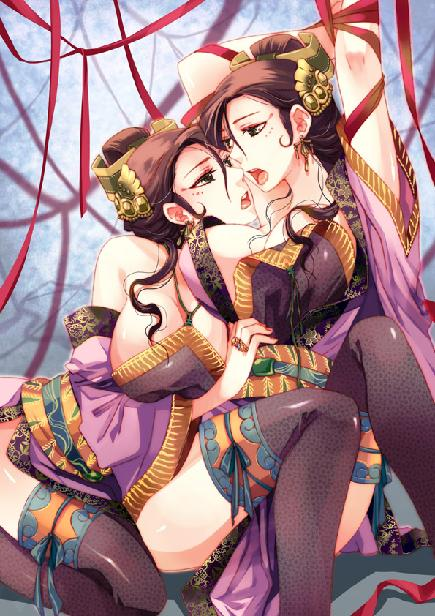
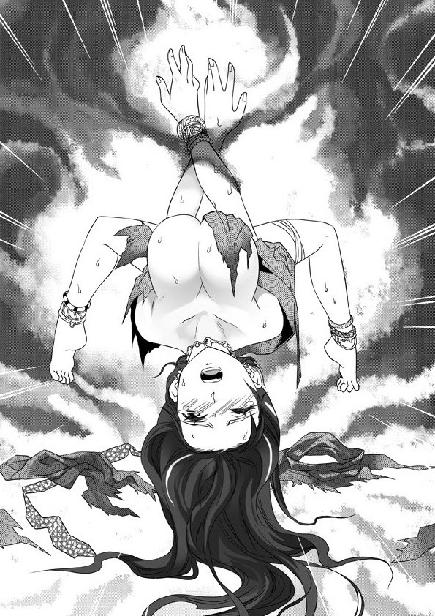
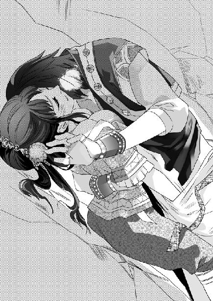

第9集·九幽阴煞
南荒篇（6/9）
出版日期：2010-04-09
【本集内容简介】
程宗扬与众人失散，独自遇见了美人鱼般的小紫，能够变身的幼稚少女是受到海神眷顾的意外吗？小紫向程宗扬指出了一条通往鬼王峒的道路——龟纹古道，却走进了巨大的古代遗迹，在这荒圮的乱石堆中潜伏着巨大危险……
一行人终于抵达鬼王峒。本以为应当是数万甚至数十万的恐怖势力，才能够蚕食鲸吞地令南荒臣服旗下，但这片深幽不见底的地堑里，除却奴隶，鬼王峒竟然没有多少人马，花苗所预定的暗杀计划透出一线曙光。而程宗扬也终于见到了让谢艺念兹在兹的女人——碧姬。但，情况似乎不是他所想象的那样……
※ ※ ※ ※ ※

封面人物：达古的孪生妻子

插图：花苗女子

插图：乐明珠
丛林间传来几声鸟鸣，背负着货物的马匹、走骡在枝叶间鱼贯穿行。潮湿的泥土上印着巨象深深的足痕，铜盆大小的足印每一步都隔着数丈的距离，一路向西行进。
云氏商会用的都是军马，白湖商馆的走骡也腿长体健，朱老头那头草驴混在里面，活像一只大耗子。
朱老头一路哼哼唧唧地抱怨，说他们这些北边来的人心眼都坏透了，不厚道，雇人带路还不给钱，一群几尺高的汉子欺负他一个老人家，缺德啊。
程宗扬很体贴地告诉他，如果急着有事就先回吧，自己跟着脚印走就行。反正鬼王峒离这里也不是很远，大家有缘的话，下次来南荒说不定还能见面，到时就把向导的钱给他结了。
下次是什么时候？这可说不准了，你要让我自己摸着良心说吧，这辈子我都不想再来南荒这鬼地方！可人这缘份从哪儿说起呢？也许过个十年八年，哪天老天爷不开眼，又把我打发来了。
程宗扬一通鬼扯，朱老头听得脸都绿了。
云苍峰有意落后一步，客气地说道：“这趟辛苦你老人家了。此间事了，云某会亲自去拜见殇侯。”
朱老头这人吃不得软的，云苍峰一客气，他那把山羊胡立刻翘到了天上，用鼻孔说道：“殇侯哪儿是那么容易见的？换作你六弟来还差不多！”
凉爽的海风被隔在山后，空气渐渐变得闷热。花苗女子唱起山歌，让这段枯燥的旅程多了几分欢快。商队沿着白象的足迹一路行进，周围的灌木越来越密，到中午时分，已经进入密林。
几只金黄色的猴子在林间出没，忽然队伍里传来女子的惊叫。一只猴子从树上垂下，抓住乐明珠的头发，扯掉她头上那圈白色的狐毛，然后做了个鬼脸，飞快地跳上枝桠，消失在林中。
乐明珠像傻掉一样拉着松开的发丝，过了会儿才惨叫一声：“我的头冠！”
朱老头嘿嘿笑道：“这山里的猴子就喜欢抢人的东西。别怕，不就几根白毛吗？大爷再给你弄一个。”
程宗扬知道底细，那顶朱狐冠是乐明珠师门宝物，如果丢掉，这丫头恐怕真得自杀了。
“我去追。”说着程宗扬追了过去。
祁远一把没拉住，急得直跳脚，“我的大少爷！南荒你也走了一个多月了，这林子哪儿是随便进的！”
猴子在树枝间飞快地跳跃着，金色的皮毛时隐时现，一边跑，一边不时停下来朝程宗扬龇牙咧嘴，还抓起树上的果子乱砸。
程宗扬猝不及防，险些被它砸中，想要还击，那猴子已经跳上另一棵大树，只露出一只红红的屁股在枝叶间闪动。
程宗扬只好咽下这口气。猴子在树上跑，自己在地上追，辛苦不说，还要小心不被藤蔓绊倒。好在那猴子跳跳停停，一直没逃出视线。
猴子又一次停下来，从树枝摘下一颗拳头大的果子，朝程宗扬丢来。程宗扬暗叫一声来得好，高高跳起，以一个接球的姿势接住果子，随即一手托住果子底部，一手前推，用力一投。
“砰”的一声，投篮命中。那猴子脑袋被果子砸中，在树枝上晃了一圈，然后头下脚上地栽下来，在草中微微喘气。
程宗扬从猴爪中夺过狐毛，待直起腰，才发现自己来到树林边缘。一条小河弯弯曲曲从林中淌过，水面不时漂过浮萍。
回头看时，商队早没了踪影。眼前净是一模一样的树木枝叶，连自己从哪个方向追来都辨不清楚。
“老四！”程宗扬放声高喊，叫声惊动了一群白首翠羽的野鸟，扑扑擞擞从林中飞起，随即又陷入寂静。
那条河并不宽，两岸树木丛生，低垂的枝叶几乎触到水面。忽然，一条碧绿的尾鳍从水面扬起，在空中轻轻一甩，溅出一串水珠。一具洁白的躯体仿佛贴在水面下的倒影，在河中轻盈地游动着，逆流而上。
“喂！”程宗扬叫了一声。
鱼尾微微摆动，那具纤美的身体转了一个圈子，上身浮出水面，露出一张精致的面孔。
“程头儿……”小紫欣喜地扬起小手。
昨晚清除蛇傀那些人的时候，小紫就没有露面，众人还以为她被吓坏了，没想到她会在此地出现。
程宗扬道：“你怎么会在这里？”
“小紫要去见阿娘啊。”
娇美的小美人鱼游到岸旁，然后露出水面。她的鱼尾已经消失不见，赤裸着雪白的双腿踏到岸边绿茵般的草地上。刚从水里出来，小紫身上没有任何衣物遮掩，只在腰侧束了一只海兽皮缝制的小袋子。
程宗扬不由地屏住呼吸。小紫肌肤晶莹，通体洁白如玉，虽然童稚未褪，仍精致得令人难以置信。她双乳又圆又润，宛如两颗精美的水晶球。稚嫩的乳头又小又翘，呈现出淡淡的嫩红色。波浪般的秀发从乳侧垂下，贴在雪嫩的肌肤上，不住滴着水珠。
小紫似乎还不知道在别人面前裸露身体有什么不对，笑靥如花地走到岸上。阳光透过林叶，斑驳地洒在她雪滑的胴体上，在晶莹的肌肤上映出一层淡绿的光泽。
自己已经见过小紫纤细的腰身，却是第一次看到她人类的下肢。少女雪玉般纤软的腰肢下，胯骨带着柔润的弧度微微张开，然后收紧，下面是两条光润的美腿，紧紧并在一起，中间没有丝毫缝隙。她小腹光洁而白滑，小腹末端隐约能看到几丝纤细柔顺的毛发，根本看不出她曾经有过鱼尾的痕迹。
这样看着少女稚嫩的肉体，竟然有种犯罪的感觉……
程宗扬干咳一声，“你的衣服呢？”
小紫提起那只海兽皮缝制的小袋子，“在这里啊。”
小紫低着头拿出一条白色的棉布巾，忽然“咦”了一声，跑到程宗扬身后。她蹲下来，同情地说道：“小猴猴怎么了？好可怜哦。”
“哦，它只是晕过去了。”
小紫拨了拨猴子的小爪，然后仰起脸，央求说：“救救它好吗？”
程宗扬摸了摸鼻子，“它又没死……”
“我们可以把它种活啊。”
“什么？”
“我们挖一个坑，把小猴猴种到里面，然后浇上水，小猴猴就会长大。”
真是个好主意……
程宗扬为难地说道：“可惜我们没有挖坑的工具。”
小紫蹲在地上，光洁的背脊晶莹如玉，脊椎的位置凹陷下去，显出一条精致的玉沟，光润得让人想伸手抚弄。在她脊椎末端，那只粉嫩的小屁股光滑得宛如雪球。
“好可怜啊……”小紫失望地收回手，眼睛盯着小猴子，一边起身，将雪白的棉布巾放到腿间。那布巾只有程宗扬手掌大小，四角系着细绳。小紫笨拙地将两侧细绳系在一起，却总是系不好。
小紫扬起脸，“你帮我系，好不好？”
看着她小手在腰侧稚拙的动作，努力想把那块巴掌大的布片系到腹下，程宗扬鼻血都快飙出来了。小姑娘两腿微微分开，细嫩的小手将雪白的棉布巾按在下腹，布巾四角的细绳低垂下来，在雪嫩的大腿内侧摇晃，一眼望去，触目满是晶莹的肌肤。
程宗扬深吸了一口气，然后蹲下来，从小紫腿间扯起细细的系带。少女肌肤上散发着淡淡的海藻气息，曲线优美的双腿又白又嫩，犹如脂玉。
克制住心底的激荡，程宗扬低笑道：“这么笨，连带子都系不好？”
“小紫不会系啊。”
“哦？你以前不穿内衣吗？”
“嗯。这是阁罗叔叔拿来的。他说，小紫身体下面是给鬼巫王大人的礼物，要用棉帕包好。”
手指不可避免地碰触到少女腰侧的肌肤，那种滑嫩的触感让程宗扬心头一阵荡漾。似乎是觉得痒，小紫“咯咯”轻笑起来。
“你娘不是说过，小紫的身体不能让别人随便碰吗？”程宗扬吃力地说道：“为什么让我帮你？”
“因为程头儿是好人啊。”
阳光透过枝叶，影子在草地上慢慢移动。小紫一边说，一边悄无声息地从海兽皮袋里摸出一根骨质的尖锥。她两眼亮晶晶的，巧笑倩然的唇角露出一丝嗜血的兴奋……
这支海兽牙齿磨制成的利锥足以刺穿这个男子的脖颈。只要避开他颈侧两条大动脉，顺利穿透他的喉管和气管，他就会喘不过气来，无法呼吸，也无法呼救，只能像濒死的野狗一样挣扎，抽搐着流尽最后一滴血……
“好了。”程宗扬放开手，笑呵呵地抬起头。
从下面看去，只见小紫两团圆润的雪乳皮肤紧绷着，紧紧并在胸前，乳头像受凉般翘起，颜色也比刚才上岸时略深了一些。
“程头儿……”小紫软软说着，从随身的袋子里拿出一颗水果。
程宗扬笑着摇了摇头，旁边忽然金黄的颜色一闪，那只猴子一把抢过果子，朝他龇了龇牙，然后飞快地跳到树上逃跑了。
小紫吓得躲了一下，然后又高兴起来，“小猴子活了呢！”
一只猴子，活就活了吧。本来自己就没准备处死它。程宗扬努力把视线从小紫耸动的雪乳上移开，一边转过话题，“你是一路游来的？”
“是啊。”小紫把陷入股缝的棉帕拉好，然后穿起衣服，一边好奇地问：“你们要去哪里？”
“我们去鬼王峒，和你的阁罗叔叔做生意。”程宗扬又看了看密林，这会儿还没听到动静，可以肯定自己和商队失散了，不然凝羽肯定会追来的。
“小紫，你知道路吗？”
“知道啊，沿着河往上游。”
“一直游到鬼王峒？”这恐怕要游上几天几夜，程宗扬自问没这个本事。
“不是啊。再往前走，水就分开了，然后就要走路了。”
程宗扬断然道：“那好，我们一起走。”
小紫系好衣带，奇怪地问：“你的伙伴呢？”
程宗扬无奈地说道：“我和他们失散了。”
小紫说，她昨晚就睡在海里，天亮时才离开海湾，沿着自己曾经游过的路线进入山林。
被鲛人击败后，碧鲮人曾经试图离开海洋，到内陆生活，但南荒闷热的气候对他们造成的威胁，丝毫不逊色于鲛人的鱼叉。经过数次不成功的尝试，碧鲮人没实现定居陆地的梦想，却与鬼王峒有了最初的接触。
沿着这条碧鲮人称为淇陶的河流向上，经过一个白天的水程，会在河流分叉的地方看到南荒最古老的道路：龟纹古道。
那几乎是南荒唯一可以长距离通行的道路，形如龟背花纹的石径绵延穿过丛林、山坳和沼泽，一直延伸到大山深处。
龟纹古道并不是完全连续的，无数年来的山洪、地震和泥石流，使道路出现了许多处断裂。而且古道两旁分岔出无数小径，这些小径有的被山峰阻隔，有的消失在河流之下，还有的会通向一些不知名的神秘区域——比如这处类似巨石阵遗址的地方。
一大一小两个人影仰起头，呆若木鸡地望着眼前的废墟。
月光下，一堆巨石突兀地出现在视野中。这是一座倒塌的巨型建筑，太过久远的时间，使这些巨石表面布满风蚀的坑洞。一座门形的巨大建筑立在废墟前，黑沉沉的方形洞口仿佛怪兽张开的巨口。
小紫发呆地看着这一切，过了会儿才可怜兮兮地说：“小紫好像是迷路了……”
程宗扬跟着小紫走了一个多时辰，好不容易才从密林中找到一条几乎被藤萝覆盖的小径，没想到小径尽头却是一座废墟。
这就是相信一个弱智的代价。程宗扬没办法责怪小紫，只能怪自己不应该把希望寄托在明知道不可靠的目标上。这会儿天知道自己在南荒哪个方位，离商队有多远。
“看来，我们今晚只能在这里过夜了。”
小紫有些胆怯地看着周围，然后抱住裸露的手臂，小声道：“好冷……”
程宗扬只好很绅士地脱下外衣，给小紫披上。小紫高兴地笑了起来，那一瞬间，她精致的面孔犹如奇花初绽，美丽得令人心悸。
这样美丽的面孔，即使是白痴也可以原谅吧。程宗扬肚子里叹息一声，突然莫名地一阵心惊肉跳。他不安地望望周围，除了那座废墟，并没有什么异常。
再破败的废墟也比野兽出没的丛林更让人有安全感，程宗扬领着小紫翻过零乱的碎石，踏进石门。他本来想随便找个避风的地方，但小紫显得很害怕，于是便领着她往废墟深处走去。
看得出，这处废墟是某座远古建筑的遗迹，有宽阔而积满碎石的走廊，折断的石柱和倒塌的墙壁构成的房间。程宗扬尽量挑选容易通行的地方，七绕八拐，终于发现一处比较干净的角落，他让小紫乖乖坐好，然后道：“我去找些东西吃，你不要乱走。”
小紫认真点了点头。
程宗扬想了一下，从背包里拿出那柄珊瑚铁制成的匕首，用刀柄在石头上刻了个三角标记。废墟面积足有四五个足球场那么大，残存的断垣残壁形状大都相似，程宗扬怕自己迷失了位置，一边走，一边沿路在醒目的位置刻上标记，最后一道刻在门上，这才进入森林。
黑暗的森林浮动着诡异的气息，仿佛有无数生灵趁着月色在林中飘荡。程宗扬不敢进得太深，他在森林边缘找到几丛蘑菇，按照祁远教的那样，避开色泽鲜艳、菌冠尖长的，只挑那些灰扑扑不起眼的采了几株。幸运的是一只野兔被他惊动，从栖身的草窝蹿出，让程宗扬顺手牵了羊，拧着耳朵提到手里。
废墟灰白色的石块寂然无声，石上自己留下的标记清晰可辨。程宗扬带着猎物，沿着自己留下的标记一路走进废墟。东绕西拐走了差不多半刻钟，隐约看到最后那个标记。忽然，耳边仿佛传来小紫低低的抽泣声。
程宗扬心里一紧，连忙加快速度，朝她藏身的地方冲去。
那个抽泣声一闪而过，废墟又恢复了平静。程宗扬匆忙辨认着石上的标记，脚下没有丝毫停顿。刚绕过小紫隐蔽处的巨石踏进两步，就仿佛撞在一张无形的大网上。
没等程宗扬明白过来，身体已猛地向后弹回，接着两脚悬空，在空中来回摇荡。
程宗扬仍保持着刚闯进来的姿势，四肢张开，大字形悬在半空，连手中的野兔也僵硬地飞在空中。他急忙往角落里望去，眼前空荡荡的碎石上生着发黑的苔藓，完全不是自己和小紫分手的地方。
“小紫！”程宗扬大叫一声。
一阵轻微的震动传来，程宗扬头颈都无法转动，他勉强转过眼珠，只见一条生满黑色毛刺的尖腿正从头顶的方向伸入眼帘。
一只巨大的蜘蛛出现在岩石上方，它触肢细而尖长，黑色的外壳泛着金属般的光泽，四颗大小不一的眼珠同时朝程宗扬望来，透出慑人的寒光。在它腹部下方，生着一张箕形的嘴巴，无数细小的触肢在嘴巴边缘蠕蠕而动，仿佛在择物而食，令人毛骨悚然。
程宗扬背后掠过一阵寒意，是阴蛛。自己曾经在南荒遇到过，但那只体型比它小了许多，更没有这样可怕的嘴巴……
阴蛛眼珠转动着，然后伸出尖长的触肢，往空中一踏。空气中传来一阵轻微的波动，那是一根透明的蛛丝，比草茎粗不了多少，从岩石上方一直延伸到自己身体下面。无数蛛丝以比普通蛛网更复杂精巧的方式编织在一起，形成一张透明的大网，将自己牢牢黏在上面。
程宗扬竭力抬起手臂，想伸进背包。以自己现在的力气，即使同等粗细的麻绳也能挣断，但看似脆弱的蛛丝不仅结实之极，而且充满黏性。自己使尽力气，也仅能把蛛丝拉得变形。
手背被蛛丝黏连的皮肤传来一阵轻微的麻痒感，渐渐像火烧一样变得刺痛。
突然，一股鲜血淌到手背上，顺着手臂流到脖颈中。程宗扬喉结狠狠动了一下，就在自己手掌边缘，那只脸盆大小的阴蛛从腹部下方伸出一根尖刺，刺穿了野兔的皮毛。
充满腐蚀性的消化液注入野兔皮肉内，野兔的血肉、内脏随之腐化，变成可供阴蛛吞食的腐肉。
如果被这玩意儿扎一下……程宗扬打了个冷颤。
“程头儿……”小紫的声音从远处传来。
程宗扬大叫道：“别过来！”
小紫雪白的面孔从另一侧出现，惊讶地看着蛛网上变成猎物的男人。
“快跑！快跑！”
小紫却像呆住一样，站在原地。
“程头儿……”小紫怯生生地小声道：“你怎么了？”
“我被蛛网黏住了。”
那只野兔已经被阴蛛吞食干净，只剩下一张空皮悬在网上。阴蛛拔出尖刺，四颗黑宝石般的复眼同时朝另一只猎物看来，那根滴着红褐色汁液的尖刺缓缓挺起。
程宗扬周身的血液都仿佛凝固。那尖刺慢慢接近，忽然喷出一条半透明的细丝，落在他鼻尖。
对于体型较大的猎物，蜘蛛通常会用丝把猎物裹起来，确定它无法挣扎，再开始猎杀。很显然，这只刚吞食过野兔的阴蛛并不饿，只是它把程宗扬的脑袋当成猎物，像纺一粒茧那样，用蛛丝把他脑袋一圈圈缠起来。
隔着蛛丝，依稀看到小紫的唇角微微挑起。程宗扬以为那是视角的变形，接着他听到小紫娇柔的声音道：“程头儿，我来救你好不好？”
“不……不……”程宗扬努力吐着字，想阻止小紫自投罗网。
小紫一手背在身后，笑靥如花地朝程宗扬走来。
这个男子真的很笨。她握着那根尖硬的兽牙锥，心里想：连自己重刻了标记都没看出来，就那样闯进阴蛛的巢穴。让他被阴蛛吞食掉，场面肯定很好看，但如果有鲜血，小紫会更喜欢……
“朱老头！你指的这是什么路！”
紧要关头，一个破锣般的嗓子响起，声音远远地传了过来。该答话的朱老头似乎也愣了，过了会儿才嘴硬地说道：“没错，就是这儿！那个……啊，咱们说过的，今天就在这儿歇！”
“我呸！”那个粗豪的声音道：“你说的可是村子！这鬼地方连根人毛都没有！你让大伙儿住野地啊？”
又一个男人的声音响起，小紫心里浮现出一张脸色青黄的面孔。祁远道：“是不是走错路了？”
朱老头叫起屈来，“好端端的，咋会走错了呢？准是你们那马欺负了俺那驴……”
废墟外吵嚷声响成一片，程宗扬耳朵被缠住，只勉强能听到一阵“嗡嗡”声。小紫眼睛转了几下，然后拿起兽牙锥，用力朝一根蛛丝挑去。
※ ※ ※ ※ ※
“这……这是从哪儿说起呢？”
那只阴蛛被武二郎大卸八块，已经死得不能再死。这边几个人把程宗扬救下来，七手八脚扯开他头上的蛛丝。
祁远唠唠叨叨说着这一路的事，虽然婆妈了些，好歹程宗扬大致听明白了。
自己闯进密林，就与商队失散了。众人找了许久，也没有找到他的下落。朱老头告诉大伙儿，前面有南荒人的村子。眼看天色将晚，留在林中凶多吉少，众人商量不如安顿下来再来搜寻。
凝羽和谢艺仍不肯放弃，众人便与两人约定了会合的地方，然后和朱老头一同赶往他所说的村子。谁知那老家伙也迷了路，不知怎么摸到这片废墟。还算来得及时，正好救了程宗扬一命。如果晚来一步，他免不了也和那只野兔一样，只剩下一张空皮囊了。
阴蛛的蛛丝带有毒性，程宗扬直接接触蛛丝的脸、手像被蚊虫蜇过一样又红又肿。乐明珠跑来看过，说毒性并不强，给他抹了些草药，养两天也就好了。
乐明珠走时没找到小紫向她告别，这时遇到，可把小丫头高兴坏了。再接过程宗扬递来的朱狐冠，乐明珠更是开心，几乎想搂着他亲上一口。
程宗扬失望地说道：“怎么不亲呢？”
众人在废墟中清理了几处地方，将队伍安置下来。凝羽和谢艺两人始终没有回来，程宗扬虽然心头忐忑，但想到谢艺和他那把不起眼的刀，就放下心来。
易彪在废墟中生起篝火，祁远将刚采的蘑菇和从碧鲮族带来的鱼干一并拿出来，放在火上烧烤。赶了一天路，众人都饥饿难耐，不一会儿就你一口我一口吃了个干净。这边乐明珠却因为朱狐冠失而复得喜不自胜，缠着程宗扬不放，非要问他怎么逮到那只猴子的。
“嘻嘻，你脸上都是草药，没有可以亲的地方呀。”
“胡说。”程宗扬指了指自己的嘴唇，“这里就没有嘛。”
乐明珠皱起小鼻子，鄙夷地说：“我才不和你亲嘴呢。”
程宗扬嫉妒地说：“你就亲小紫了。”
“小紫好可怜哦。那些人对她一点都不好。”
“谁？”
“村子里的人，还有鬼王峒的坏蛋们。喂，我们帮小紫找到妈妈，然后把她带走吧。”
“做什么？”
“让她当我的小师妹好不好？”
“别傻了，你师傅会收一个小白痴当弟子吗？”
想到跟着小紫差点送命，程宗扬就不禁害怕。
“那有什么！”乐明珠不服气地说：“我这么笨，师傅都收我了呢。”
程宗扬大笑起来。
“笑什么笑？有什么好笑的？”乐明珠白了他一眼，然后眼珠一转，小声商量道：“喂，你如果把她说服了，我就让你亲一口，好不好？”
连这样的条件都摆了出来，这丫头对小紫还真是好。程宗扬翻了翻眼睛，“我又不是没亲过。”
自己本以为会逗得那丫头恼羞成怒，可乐明珠只撇了撇嘴，“肚子里都是你的味道！臭死了！臭死了！我以后再也不让你给我做人工呼吸！”
程宗扬怔了一下，当时乐明珠曾经提起过，但因为被鲛人袭击，自己忘了询问。
“你也知道人工呼吸？”
“当然了，这些急救术都是我们光明观堂弟子必修的。不过我们才没有你那么笨呢！师傅说，至少要在别人嘴上放一块丝帕，不然很可能通过嘴巴的接触生病。压迫肺部的时候也不要太大力，免得压断肋骨。不过这都是什么都不会的人才用的，像我们，最好的方法还是用针灸激发伤者自身的元气。”
“是你们那本医药大典上传下来的吗？”
乐明珠得意地说道：“急救术是我师傅整理的。除了人工呼吸，还有噎嗝急救的气管穿刺法、腹部压迫法……”
小丫头叽叽咯咯说着，不远处，商队的汉子们已经吃完食物，正在搭建帐篷准备宿营。
易彪提着刀从岩石后回来，低声对云苍峰说了几句。云苍峰眼中顿时精光大盛，“在哪里？”
※ ※ ※ ※ ※
废墟中心位置有一处空地，灰白的岩石上溅着暗红色的血污。望着地上的图案，程宗扬颈后毛发一根根耸起。
一个圆形，一个三角，简单地构成一幅大笑的鬼脸图案。用锐器刻成的沟槽深深刻入岩石，里面汇聚着凝固的血迹，散发出刺鼻的血腥气。
祁远脸色发白，“这里是鬼王峒？”
朱老头一脸不知道“死”字怎么写的表情，笑呵呵道：“没呢没呢。顶多是那帮孙子的营地。”
“什么营地？”
“养点儿战士，修炼点儿巫术，培养点儿怪物啥的。”
易彪扭过头，寒声道：“朱老头，你挖好坑让我们跳？”
他凶狠的样子让朱老头吓了一跳，连忙摆手道：“误会！误会！我……我真迷路了还不成？”
程宗扬摸着鼻侧刺痒的部位，沉声道：“朱老头，你给我们说清楚。怎么这么巧，把我们带到鬼王峒的营地来？”
朱老头哭丧着脸道：“真的是误会啊。南荒的路就这衰样，走着走着就不知道走到哪儿了，这地方离鬼王峒越来越近，有他们的营地也算不得什么——小程子，你可没跟大爷一起，不也走到这儿了吗？”
程宗扬朝四周望去，心头突然一凛，那种心惊肉跳的感觉又回来了。就好像自己床下卧着一条毒蛇，在自己视线未及的角落里张开锋利的毒牙……
“咚！”
一声金属般的鼓声响起，接着外面的马匹嘶鸣起来。
“咚！咚！咚咚咚……”
仿佛从地狱传来的鼓声越来越近，易彪当先带着他仅剩的三名手下闯出去，接着剩下的人也纷纷奔出。
铜鼓的震响从密林深处传来，一步步逼近废墟。大伙儿升起篝火烧烤食物，单是火光和食物的香味就给林中的敌人传递了足够的信息。还没有接触，对方就擂起战鼓，显然对他们这些闯入营地的人动了真怒，眼前这一战已经避无可避。
商队与鬼王峒交手几次，不是伏袭就是遭遇战，像这样双方对垒的状况还没有出现过。众人互视一眼，程宗扬断然道：“易彪，你打过仗，你来安排！我们都听你的！”
“易雄！”易彪也不客气，立即厉声道：“把马牵到后面！列阵！”
他旁边的护卫答应一声，将商队的健马迅速牵到废墟入口的地方。云氏商会的马匹都是精选的战马，在他的操弄下，十几匹战马头尾相接地盘腿卧地，形成一道半月形的屏障。
谢艺和凝羽这两名好手不在，商队剩下的只有云氏商会四名护卫，白湖商馆的吴战威、小魏和祁远，即使加上程宗扬才八个人。而他们对面，纷乱的枝叶声从十余丈的宽度内同时响起，显然敌人数量不菲。
要命的时候武二郎和苏荔又不见踪影，剩下的花苗人商议片刻，卡瓦带着仅存的两名花苗汉子也加入进来。易彪将小魏、祁远和一名使弓的花苗汉子放在战马围成的屏障之后，让他们使用的弓弩作为远距离第一道攻击力。自己和两名同伴拿起刀枪和沉重的钢盾，品字形站在战马前，形成一个突出的箭头。程宗扬、吴战威、卡瓦和另一花苗汉子埋伏在马匹后，随时准备接手。剩下的人，包括花苗族的女子、云苍峰、乐明珠和小紫全部退进废墟。
至于朱老头……
“明白人啊。”祁远很佩服地感叹道：“吹牛的时候坚决吹牛，保命的时候坚决保命，丁是丁卯是卯，该逃就逃一点都不含糊！”
“没他添乱正好。”程宗扬道：“易雄，把朱老头的驴放在最前头，打死了咱们正好吃肉。”
易彪手里的长枪缓缓举起，众人立刻都闭上嘴。
第一个头生鬼角的鬼王峒战士从林中出现，他挽着一张黑沉沉的铁弓，双臂拉开，将粗糙的铁制箭头瞄向易彪的胸口。
“呵……喔……”
失去舌头的鬼王峒战士发出低沉的吼叫，接连从林中现身。他们披着简易的甲胄，黝黑的皮肤像岩石一样粗糙而坚硬，手臂和大腿上，那些符咒般的纹身微微闪动着暗红的光泽，眼睛犹如跳动的鬼火。
这些战士与商队曾经见过的鬼武士有着同样的种族特征：狰狞的鬼角，丑陋的面孔，岩石般强壮的身躯，尖利的牙齿和神秘的纹身。唯一的区别是他们头上的鬼角像刚刚生出来一样细小，显得很新。
易彪提了口气，高声喊道：“我们是——”
“嘣”的一声，那名鬼武士仿佛没有听到他的喊话一样，松开铁弓，箭矢带着沉重的呼啸声撕开空气，朝他射来。
“易彪！”云苍峰在后面沉声喝道：“不用说了，他们听不到。”
易彪举起钢盾，“铛”地格开铁箭，接着右臂一振，长枪笔直划过数十丈的距离，重重刺进那名鬼战士胸膛，穿透他的躯体，将他钉在地上。
易彪的投枪揭开了厮杀的序幕。旁边的鬼战士无视于同伴的死亡，他们眼中闪动着嗜血的红光，嘶嚎着朝商队扑来。
马匹后飞出几根箭矢。小魏的弩机力道最为强劲，箭矢穿透了一名鬼战士的大腿。另一名花苗汉子的弯弓也不错，射中一名鬼战士的腰腹，只有一截白羽露在他岩石般的腹肌上，微微抖动。相比之下，祁远那一箭就差远了，箭头只勉强穿透一名鬼战士的皮肤，深度还不到一指，那名鬼战士甚至没有伸手去拔，手臂肌肉一鼓，就硬生生将箭头挤了出来。
旁边的花苗汉子说了几句，意思是祁远使弓的方法不对，没有把弓弦完全拉开，射出的箭矢缺乏力量。
不过祁远也有办法，他扯下走骡背上一只袋子，掏出一把干树皮，塞在口里猛嚼，然后拔下酒葫芦的塞子，狠灌一口，把嚼碎的树皮和酒涂在箭头上。
祁远“呸呸”地吐出嘴里的树皮渣子，然后一龇牙，“这可是好东西！山榉树皮跟酒一混，就是上好的麻药！”
“麻药恐怕不行。”程宗扬伏在鞍后，眯眼观察着冲来的鬼战士。他见过祁远用这种麻药打猎，效果不坏，但是……
“这些家伙几乎都是死人吧。”
同样是来自鬼王峒，前往白夷族的使者，在碧鲮族遇到的阁罗、蛇傀和黑舌，与这些鬼战士并不一样。鬼战士虽然有呼吸和血液，但没有自我意志，像傀儡一样受人驱使。程宗扬猜测，他们和易虎一样，都是被巫术炼制的行尸。
祁远打了个突，然后道：“赌一把！这麻药是随着血脉走的，只要这些东西会流血就成！”
三个人伏在马鞍后，拼命放箭。这时小魏弩机的劣势便显了出来，他动作虽然利落，但绞弦的速度比拉弓慢了许多，花苗汉子放出三箭，他的弩机只开了两次。等小魏第四次绞紧弩机，最前面的易彪已经扑过去，与冲来的鬼战士短兵相接。
第一次与鬼王峒武士交手，正值大雾弥漫，后来在白夷族只来了易彪一个，直到这一刻，程宗扬才看到这些北府兵军士的战术。
这时虽是夜晚，月光却极亮。很明显能看出这些汉子受过严格的训练，战斗纪律极为严明。易彪虽然勇悍，却绝不轻易冒进，他掷出长枪的同时，已经操刀在手。交手时一手执盾，往侧上方挡住对手的兵刃，右手长刀向下劈出，一刀砍断了那名鬼战士的小腿。
易彪身后的两名军士用的都是长兵器，他们与易彪隔着一步的距离，一左一右刺向易彪对面的鬼战士，同时替他挡开来自侧方的威胁。三人形成一个攻守兼备的整体，无论进退都整齐划一。
这一幕让程宗扬有种似曾相识的感觉。自己刚穿越到这个世界时，曾遇到一小队骑兵遭受伏击，当时他们也采用类似的协同战术，以团体与敌方对抗，尽量避免单打独斗，在一个点上保持压倒性的优势。
这种战术在遇到崇尚个人勇武的对手时，效果十分显著。那些受过强化训练的鬼战士每个人拉出来都不比易彪差多少，但易彪三人同进同退，每次抓住机会展开小规模的攻击，都形成以三对一的局面。虽然在人数上他们完全处于劣势，可攻击的一刻，却是以三倍的力量压倒对手。
这个攻击团体不仅配合熟练，而且采取的战术灵活之极，将自己仅有的优势发挥到最大。他们从半月阵的弧顶开始进攻，始终保持着与后方的呼应，距离半月阵最远不超过五步，以避免被敌人从后方包抄。
易彪以斜线的方式先将敌人的攻击吸引到左侧，然后逐步后撤，一直退到半月阵边缘，完全解除掉后方的威胁。接着对阵形距离稍作调整之后，再以斜线方式往右侧攻击，尽可能把敌人挡在阵前三到六步的距离以内，在此范围中来回牵引对手，使半月阵后的弓弩在短距离内最大可能地杀伤对方。
三人组成的攻击小组成为整个商队的刀锋，或者第一道防线。在他们背后，是十几匹战马组成的第二道防线。那个叫易雄的汉子极擅长操控马匹，每有马匹受惊或者受伤嘶鸣挣扎，他都抢先快速调整阵形。直到鬼王峒战士展开攻击一刻钟后，还没有一名鬼战士能够冲过这道简单得称不上战阵的阵线。
负责守御半月阵的除了易雄，还有卡瓦和他同族的花苗汉子。绝大多数鬼战士都被最前方突出阵外的易彪吸引，偶然有人试图冲击半月阵，也被弓弩和卡瓦的长刀解决掉。
使用弓弩的小魏、祁远和另一名花苗汉子是第三道防线。小魏已经是第八次张开弩机，他的手虽然仍然很稳，速度却不可避免地越来越慢。祁远拉弓的力道也渐渐跟不上节奏，射出的箭矢甚至无法穿透鬼战士坚硬的皮肤。不过他的麻药并不像真射在尸体上那样全无效果。几名被他射中的鬼战士虽然受创不重，动作却迟钝下来。
祁远一个劲儿地咋舌，“这帮家伙比牲口还壮，这药就是一匹马也麻翻了，他们还能扑腾？”
受到麻药效果的鼓励，祁远干脆放弃攻击，一门心思地替旁边的花苗汉子和小魏往箭支上涂药。
按照易彪的布置，程宗扬和吴战威始终伏在马鞍后，没有参与战斗。乐明珠愤愤不平，她认为自己也很能打，却没有人让自己出手，实在是太过分了。不过程宗扬只用了一句话，就成功避免了这丫头过来添乱。
“看好小紫！”
“嗯嗯！”乐明珠连连点头，很尽责地把小紫护在身后。
程宗扬松了口气，易彪的战术很有效，如果让这丫头上来，天知道她会捅出什么漏子来。
鬼王峒的战士几次冲上来，与卡瓦他们厮杀，程宗扬都忍不住想出手，但强行压制下来。易彪把自己和吴战威放在最后，很明显是让他们作为埋伏的预备队。他们隐瞒得越久，杀伤力越大，商队支撑的时间也会更长。如果能支撑到武二郎、苏荔，甚至谢艺和凝羽赶回，大伙儿才有活命的机会。
想到这里，程宗扬不禁佩服起这个剽悍的汉子来，手里就这十几张牌，还要扣起两张。只不过面对数量太过悬殊的对手，仍然坚持“永远保留一支预备队”的指挥官条例，纵然正确，压力也未免太大。
他们以前遭遇的鬼王峒战士，数量最多也不超过十人，而这时从密林出来的鬼战士已经接近三十个，数量是他们的三倍。易彪利用战术消耗掉三分之一的鬼战士，其中被箭矢射杀的就有六个。另外还有几名鬼战士虽然没死，但被带有麻药的箭矢射中，已经失去战斗力。
那些鬼王峒战士虽然身如铁石，力大超群，但相应地缺乏理智，就像一群凶猛的野兽，被易彪这个出色的猎人利用战术一一击杀。
但最幸运的，还是这些鬼战士并没有他们之前遇到过的那样强悍。这些鬼战士像是刚接受训练的新兵，互相之间不能配合，数量虽然不少，但总能被易彪找到薄弱的一点痛下杀手。
对方似乎也看出情形不对，战鼓的声音突然一变，正在格斗的鬼王峒战士停顿了一下，然后分成两股，一股围攻易彪，一股朝半月阵冲来。
易彪被挡在左侧，一时无法回援。卡瓦立刻跃起身，花苗人惯用的弯刀弧形挥出，劈向最前方的敌人。这边小魏也扔下弩机，提刀闯了过去。祁远朝手心狠唾一口，吼了一声“拼了”，腾身翻过战马。
程宗扬与吴战威没有等太久，随着又一批鬼战士加入攻击，易彪终于发出信号。两人同时从鞍后跳起，一左一右朝前扑去。
“老四！”程宗扬朝吴战威低喝一声。
吴战威会意，刚才看了这么久，对易彪的战术也琢磨出一点门道来。他们两个没有与敌人纠缠，而是以最快的速度抢到祁远身后，先把正在和他交手的鬼战士砍翻。然后吴战威肩膀一扛，把祁远挤到后面，自己挡在最前方。
“右边！”
卡瓦和两名族人仍然采用最简单的战术，三人站成一线，分别迎向鬼战士。很快三人身上都挂了彩，如果不是程宗扬带着吴战威和祁远来援，他们三个在鬼战士第一波攻击下就会尽数送命。
一名凶悍的鬼战士执斧朝程宗扬劈来，他虽然身材不高大，但力量极为狂猛。他鼻翼鼓张着，两侧的鼻翼上各穿着一颗野猪的尖牙。
程宗扬双刀同时架住铁斧，刀斧相交，锋刃上发出令人牙酸的摩擦声。那名执斧的鬼战士喷出一口粗气，铁斧连续劈来。程宗扬一连挡了三斧，感觉自己就像一颗核桃，正被人用锤子一点一点敲碎，浑身的骨骼都为之震动。
盯着鬼战士额上崭新的鬼角，程宗扬向后略退半步，接着一个虎跃，左刀斜劈，右刀横扫，一招“猛虎过涧”，刀锋重重劈在鬼战士的弯角上。
头顶的鬼角是鬼王峒的种族标记，程宗扬曾遭遇的鬼武士，鬼角比坚铁还要结实，寻常钢刀砍上去立刻就会卷刃。而这名鬼战士的鬼角却微微一顿，竟然被刀锋切开一半。
那名鬼战士嚎叫一声，双手抱住额头折断的鬼角，鲜血从指缝中涌出。他慢慢抬起头，穿着兽牙的鼻翼收窄，幽深可怖的眼睛没有理会程宗扬，而是投向身后的密林。他张开口，被切掉半截的舌头费力地吐出两个字：“达古！”
接着鲜血透过皮肤，从他每个毛孔中流淌下来，黝黑的皮肤迅速干枯，变成一具干尸。
※ ※ ※ ※ ※
一个披散着头发的巫师从林中出现。他穿着灰色的长袍，额头的鬼角呈螺旋状，又粗又长，依稀带着血迹。月光下，巫师脸色一片惨白，他面容皮肤松弛，像帘子一样一层层垂下来，几乎遮住眼睛。
“咚！咚！”
带着金属颤音的铜鼓声响起。巫师一手握着木杖，盘膝坐在一只巨大的阴蛛背上。阴蛛尖长的触肢弯曲着支撑身体，那只青铜战鼓悬在它腹下，两条尖肢不停敲击着铜鼓。
巫师举起木杖，朝程宗扬一指。隔着数十丈的距离，程宗扬心头还是一寒。数名鬼战士放开各自的对手，蓦地朝他攻来。
越来越多的鬼王峒战士从林中涌出。这是他们遇到的最大一股敌人，超过他们五倍的鬼战士一点一点逼近战马组成的半月阵，连易雄也加入了战斗。
终于，商队的阵形开始崩溃，随着易彪身后的一名军士被长矛刺穿小腹，失去一角的攻击阵形立即陷入停滞，很快被鬼王峒的战士包围。
吴战威的大刀被祁远拿走送了人情，这会儿只拿了一把普通钢刀，用着要多别扭有多别扭。渐渐的，他们被逼到半月阵后面，几乎每个人身上都带了伤。
程宗扬被数名鬼战士缠住，没有来得及后撤，顿时陷入苦斗。他几次高喊自己是来做生意的商人，但回答他的只有沉默。
“我是阁罗的朋友！”程宗扬豁出去了，大叫道：“一起干过同一个女人的亲密朋友！”
巫师眼皮翻开，露出一缕幽暗的光芒。他嘴唇一动不动，却从腹部传出一个奇异而低沉的声音：“杀了你们。我们会一起干你们的女人。”
“看到了吗？那个是献给鬼巫王大人的新娘！我们是给鬼巫王大人送亲的队伍！”难得这堆半死人有个能动舌头的，程宗扬像捞到稻草一样叫道。
巫师翻着眼睛看了片刻，用腹语道：“任何闯入秘营的人，都该死。把你们杀光。我们会把新娘交给鬼巫王大人。”
“叮”的一声，程宗扬手中的钢刀被一柄粗糙的长刀荡开。刀锋贴着他的肩膀劈过，只差寸许就能将他整条右臂砍下来。
就在这时，废墟内传来一声弓弦的轻震。
一道白色的流星疾掠而过，白翎羽箭硬生生穿透鬼战士的额头，强大的冲击力使鬼战士头颅猛然向后一仰，轰然倒地。
月光下，一个美艳的身影出现在巨石顶端。她雪白的玉体裹着鲜红的丝绸，宛如一株玉树，摇曳生姿。她纤手挽弓，一箭射杀了程宗扬身前的执刀战士，接着又搭上一支利箭，瞄向鬼战士后面的巫师。
旁边的武二郎一脸怒气，看谁都目露凶光，好像在场的有一个算一个，谁都欠了他二百多银铢。
“我是花苗族的阿依苏荔，因为鬼巫王大人的命令，越过南荒的千山万水，赶往神圣的鬼王峒。”苏荔挽弓说道：“如果冒犯了你的领地，我们立刻就可以离开。”
“你们冲撞了召唤神煞的秘营。无论是谁都只有死！”巫师并没有被苏荔的箭术震慑，腹语中充满了傲慢和狠毒的意味，“花苗的阿依苏荔，达古会把你制成一具行尸，进献给巫王大人。你美艳的身体，会成为这些战士最好的玩物！”
巫师腹部一阵蠕动，仿佛在念诵什么咒语，接着手中木杖一抬，一个被易彪砍断脖颈的鬼战士猛地直立起来，挺着无头的尸体，朝苏荔扑去。接着满地的尸骸断肢都在夜色下蠕蠕而动，似乎在努力支撑起身体。
鬼战士残缺的肢体比他们活着的时候更加可怕，场中的异变让所有人都心生寒意，连负责守卫小紫的乐明珠也禁不住玉脸发白。
“去你娘的！”武二郎俯身抄起一块牛头大的岩石，然后虎躯一挺，劈手砸了出去。
“砰”的一声闷响，上百斤重的岩石砸在那具无头尸体的胸口，一下把它撞出十几丈远。尸体直飞出去，连人带石撞到那巫师身上。突然增加的重量使阴蛛四条后腿同时一弯，正在念诵咒语的巫师翻着跟头从蜘蛛背上掉到地上，断腔的污血喷得他满脸都是。
巫师根本没有将这支商队放在眼里，这突如其来的一击，把达古砸得狼狈不堪，一时间忘了反击。
挣扎着爬起的尸体、断肢摇晃了一阵，然后像散架一样掉了一地。失去巫师的驱使，那些鬼战士的攻击也陷入混乱。
巫师腹部像青蛙一样急剧起伏着，脸上松驰的皮肤不住掀动。
程宗扬叫道：“武二！就是这家伙坏了你跟苏荔族长的好事！只要干掉他，哪怕你们搞到天亮！”
苏荔啐了一口，张弓一箭射杀与卡瓦交手的鬼战士。这边武二郎根本不用煽动，单凭是达古那几句话，武二爷要不干挺这孙子，就是小娘养的。
武二郎双目凶光大盛，迈开大步径直朝巫师冲去。
巫师坐在地上，木杖急忙一摆，最前面的鬼战士放开众人，挡住武二郎的去路。武二郎双刀一错，两道刀光交叉掠过，只一个照面就把他砍成三截，毫不停顿地闯进鬼战士的阵营。那种“挡我者死死死！”的庞大气势，让程宗扬不禁感叹，这老男人的怨念真不是盖的。
武二郎的五虎断门刀比程宗扬高出不止两个级数。顷刻间，敢挡他虎威的鬼战士便三死二伤。巫师帘子一般的脸上第一次露出惧意。他腹部的呼叫声越来越急促，剩下的鬼战士纷纷奔来，一圈圈围在他身旁。
一旦数名鬼战士合力，武二郎无坚不摧的气势也被挡得一滞。商队这边人人带伤，除了苏荔用弓箭帮他清除落单的鬼战士，剩下的都在迅速包扎伤口，重整阵形。
武二郎双刀如同双虎，咆哮着在身周盘旋飞舞。他脖颈中金黄的虎斑霍霍直跳，隆起的肌肉犹如镔铁，仿佛蕴藏着无穷精力。
那些鬼战士几乎没有战术可言，完全是机械地在巫师身周围成一圈，没有利用数量优势对武二郎展开围攻。如果他们有一个易彪那样的指挥官，至少能把武二郎困住，不会让他想怎么打就怎么打。
巫师惧意越来越浓，他一边望着外围武二郎飞舞的双刀，一边用木杖在地上飞快地画着什么，腹部的鼓动也越来越急促。
忽然，一团黑影从人群中滚出。那只绑着铜鼓的阴蛛尖长的触肢缩成一团，球一般滚到武二郎身前，然后猛地弹开。阴蛛的躯体足有桌面大小，它昂起头，八条触肢弯曲着撑起躯体，在它腹下，两条畸形的尖肢缓缓舒张开来，朝腹下的铜鼓击去。
“嗷……呜！”
一声虎啸蓦地响起。武二郎颈中的虎斑鼓胀起来，他张开大口，两对锋利犬齿闪动寒光，威猛无俦的咆哮声震慑全场，散发出令人胆寒的虎威。
那只阴蛛本来已经挺起腹部的锥尖，那声虎啸使它本能地伏低身体。接着一只大脚从天而降，狠狠踩住它的背脊。
铜鼓在阴蛛腹下低哑地响了一声，两根铁锤般的尖肢顿时折断。武二郎狞笑一声，一刀从阴蛛腹背穿过，从它箕张的进食口中穿出。另一刀从它额头四只眼睛正中劈入，将阴蛛的头部劈成两半。
黄绿色的浓汁从刀锋下迸射出来，阴蛛躯体被牢牢踩住，八条触肢挣扎着扭曲成一团。武二郎狠狠唾了一口，然后抬起头颅，饿虎般恶狠狠盯向人群中的巫师。
巫师灰色的长袍被冷汗湿透，他忽然拉过一名鬼战士，从腰间抽出短刀，切开他的喉咙，一边从腹部发出嘶嚎般的叫声。
那名鬼武士毫不反抗地束手待毙，任由巫师割断自己颈部的大动脉，采取血液，其余的战士疯狂地朝武二郎扑去。程宗扬看得莫名其妙，武二郎在外面杀，巫师在里面杀，难道嫌这些鬼战士死得不够快吗？
论起处理鬼战士的速度，那巫师比武二郎可快得太多了。武二郎刚砍翻第五个对手，已经有六名鬼战士被巫师断喉取血。
程宗扬心里一动，急叫道：“武二！小心他的巫术！”
武二郎浑身浴血，背部多了一道枪尖划出的血痕。他狞笑一声，忽然收刀，将刀背贴在臂侧，锋刃朝外，然后侧身朝人群撞去。
吴战威与易彪对视一眼，都倒抽了一口凉气。他们两个也是使刀的好手，但做梦也想不到武二郎还有这种刀法。武二郎放弃了大开大阖的五虎断门刀，双手以刀贴臂，就像是在斗室中与劲敌搏命，双臂疾展疾收，时屈时伸，每一击最远只有三寸。更多的时候他手臂不动，完全依靠腰膀的力量狂冲猛撞，在最短的距离内将腰膀腹背的力量使到最大，招法绵密而狠辣，速度极快，如同将整个人变成一柄淬过火的兵刃，硬生生从鬼战士中趟出一条血路。
武二郎魁伟的雄躯在人群中越闯越深，忽然“噗”的一声，武二郎左肘后露出半尺长的刀锋，刀尖从巫师肋下刺进，直入心脏。接着右手钢刀横挥，切向巫师喉头。他这一击速度如同雷霆霹雳，力道却控制极佳，巫师目光呆滞地盯着刀锋，突然像想起什么似的脑袋猛地一抬，然后缓缓向后仰去，只留颈后一缕皮肉还连在断颈中。
“远方来的妖魔……”巫师脖颈鲜血迸涌，用腹部费力地说道：“南荒的鬼神会吸干你们每一滴……”
武二郎收回刀，然后一刀捅进巫师腹中，“我呸！”
巫师折断的头颅掉在地上，尸体扭曲成弓状。
失去巫术支撑，那些鬼战士一一倒地，尸体迅速腐烂，散发出刺鼻的恶臭。
巫师折断的脖颈间，鲜血慢慢干涸。在他脚下，一个狞笑的鬼脸图案清晰可辨。鲜血淋漓的图案正中，却多了一个浸染了血迹的草结。
程宗扬已经是第三次看到鬼王峒的人施展巫术。蛇彝村那次，他们一行到的太晚，白夷族的地宫那次，鬼王峒使者的施法被凝羽打断，都没有看到巫术施展的场景。但鬼王峒巫师宁可牺牲六名战士也要施术，可以想象鬼王峒巫术的凶险和诡异。
云苍峰双手满是冷汗，连连道：“侥幸侥幸。”
以这些鬼战士的实力，完全可以把他们击溃，纵然有人能从屠杀中逃脱，在这片被鬼王峒阴影笼罩的南荒丛林，也难以保住性命。幸运的是，武二郎一刀击杀巫师之后，余下的几十名鬼战士都化为枯骨，才让他们躲过了杀身之祸。
朱老头不知从哪儿钻了出来，装模作样地东瞧西看，然后傲然道：“这些都是还没有完全炼成的新兵蛋子，要白夷族那些有这么四五十个，你们还想活命？”
程宗扬擦着刀上的血污道：“我们如果被杀，你老人家也活不了。说起来，我们商队也救了你一命。我也不说让你报恩了，从现在起，往后的向导费给免了吧。”
朱老头嘿嘿一乐，“我就是随便说说。小程子瞧你，又当真了不是？嘿嘿嘿嘿……”
程宗扬扭头一看，讶道：“谁的驴被杀了？”
朱老头像火烧屁股一样跳起来，“我的驴哇！”
程宗扬牵起自己的黑珍珠，顺腿一脚，踢在灰驴屁股上。那草驴夹着尾巴溜到一边，把朱老头心痛得左看右看。
这边武二郎抱着膀子晃过来，上下打量着程宗扬，啧啧道：“小子行啊，那帮鬼东西竟然没砍死你？啧，连道伤口都没留，运气不错啊。”
“托二爷的福，你要多折腾一会儿，这五虎断门刀就跟我进坟墓了。”
武二郎眉开眼笑地用肩膀扛了他一下，小声道：“啥叫折腾？啥叫折腾？不是二爷我吹牛，也就是咱们依依了，换成你那个不长翅膀的丫头片子，不够二爷翻腾的。”
“依依？你也太肉麻了吧？”程宗扬小声道：“你们刚刚搞完没有？没搞完接着搞，免得你内分泌失调，逮着人就往死里揍。”
武二郎瞪了他一眼，把双刀挎在腰间，哼着小曲离开。
乐明珠手忙脚乱地给伤者包扎伤口，小紫在一旁帮忙。有这一对绝配，受伤的几个算是倒大霉了。不止一个因为包好的伤口忘了敷药，又重新揭开。只听见那丫头一连串地说着“对不起”，好像这七八个人的伤口都是她一个人砍的。
虽然有两个受伤颇重，但没有人送命。小魏也受了伤，由他那个相好的花苗女子照顾，唯一没受伤的程宗扬，当仁不让地接过看管马匹的任务。
鬼战士的尸体大都迅速腐烂，恶臭难当，谁也不愿意靠近。程宗扬把马匹转移到另外的角落，把缰绳一一系好。
好不容易安顿下来，月亮刚升过中天，刚才那一战虽然猛烈，持续的时间却不长。如果不是易彪调度有方，战术得当，又赶上武二郎和苏荔及时回来，这会儿他们的骨头都可以用来敲鼓了。
程宗扬伸了个懒腰，这会儿手脸被蛛丝蜇出的红肿已经消退，只剩下草药的清凉感。自己的外衣给了小紫，身上就一套短褂，往好处说呢，至少明天不用洗衣服，不然这一身血污可真够瞧的。
血迹渐渐变干，沾在身上脏得难受。程宗扬索性解开褂子，光着上身。一低头，他惊讶地发现，自己竟然多了几块腹肌。
以前常和段强打篮球的时候，自己一直保持着良好的身材。紫玫曾开玩笑说，就是自己的六块腹肌把她吸引住了，没想到跟了他之后，这个勤快的小伙子越来越懒，眼看着六块腹肌一块块合在一起，最后变成一大块肚腩。
现在自己又有了六块腹肌——不，是八块，结实而紧凑的腹肌。如果紫玫能看到，一定会很高兴……
一阵淡淡的香风飘来，程宗扬抬起头，看到苏荔那张似笑非笑的面孔。
“依……阿依苏荔族长。”程宗扬干笑两声，“今天可多谢你们了。”
苏荔横了他一眼，“和武二在背后说我坏话了？”
程宗扬心里打鼓。在碧鲮族那晚，苏荔说要找自己算账……自己不会有什么把柄落在她手里了吧？
苏荔在他身旁坐下，用树枝拨着篝火，过了会儿才淡淡道：“武二说你在打听蛊术？”
程宗扬连忙点头，“我对南荒的蛊术很好奇，不知道族长认不认得擅长解蛊的高人呢？”
“你们六朝人说，解铃还需系铃人。在南荒，解蛊也需放蛊人。”苏荔凤目一转，“你中了蛊吗？”
程宗扬笑道：“可能吧。”
苏荔没有追问，她把那一小堆篝火拨得更旺，然后低声道：“阿夕是怎么回事？”
程宗扬狼狈地咳了起来。
苏荔眼睛微微眯起，“你知道，阿夕是献给鬼巫王的新娘。她的一举一动都关系着我们花苗的未来。哼，我知道阿夕一向调皮，胆子也大，却没想到她这么大胆，竟然在这种时候被你骗得破了身子。”
“我可不是骗……”程宗扬说了一半，然后心一横，“都是我的不是。阿夕什么都不懂，这件事是我强迫她做的，不关她的事。”
苏荔盯着他，忽然“噗哧”一笑，“你能强迫阿夕？如果她不喜欢，有一百种方法让你得不了手。”
苏荔叹了口气，“我太了解她了。阿夕虽然顽皮，但大错是不会犯的。她既然愿意和你好，肯定有她的理由。”说着，她摇了摇头，“只不过这些天，我看阿夕越来越不对……你可不能欺负她。”
程宗扬心里生出一种怪异的感觉。对自己来说，阿夕只是一件他人送给自己的玩具，很多时候自己只是追求肉体上的快感，毕竟和自己在一起时，阿夕的心智被人封锁，想要交流也无从谈起。不过，苏荔却以为他们是两情相悦，甚至还为此准备原谅他们犯下的大忌。
“我们花苗的女人都很傻。”苏荔轻叹道：“遇见自己喜欢的人，就什么都不管不顾了。阿夕我看她还好，整天只知道玩，本来想着她对男人动心，要等到她十八岁了。可这一趟路程，她就找到了你……”
苏荔奇怪地看着他，“你有什么好的？连凝羽那样的人也愿意和你在一起？”
程宗扬嘿嘿一笑，“大概是王八看绿豆，看对眼了吧。”
程宗扬口里说着，肚子里却暗自腹诽：武二那粗胚有什么好的？你还不是跟他搞到了一处？
一阵微风吹过，篝火跳动起来。苏荔看了他半晌，慢慢笑了起来，“你把错都揽到自己身上，阿夕虽然不知道轻重，总是没挑错人。”
程宗扬不知道该怎么开口向苏荔解释，自己怀疑阿夕背后的操控者就在花苗女子中间，却没有任何证据，只好沉默不语。
黑珍珠在马群中“咴”了一声，竖起耳朵。苏荔轻轻拨着篝火，一边扬起手腕，不经意地拂了一下鬓发，红绸下，雪白的手腕犹如凝脂。
程宗扬倾了一下身，一阵寒意突然涌上心头，接着右侧的太阳穴像火烧一样剧痛起来，像被一根燃着火焰的手指按住。接着手指离开，寒意如同一只真实的利爪，在他心头一下一下握紧，然后沿着背脊掠下。血脉仿佛被冻僵般停滞，程宗扬情不自禁地咬紧牙关，手臂颤抖起来。
苏荔讶然看了他一眼，刚要开口，就看到程宗扬身体猛然一弓，仿佛被一只坚硬的拳头击中小腹，把他打得蜷缩起来。
苏荔美目光芒闪动，反手挽住弓身，玉腕一翻，将长弓拉成满月。
眼前一片虚空，看不到偷袭者的身影。
一缕乌云掩住了月光。程宗扬像被人抓住脖颈般，身体凭空飞起，然后跌落在地。
苏荔挽弓的手臂颤抖起来。
一丛细草仿佛承受不住火光的压力，青翠的草尖微微弯曲。苏荔手一抖，羽箭没有脱弦而出，而是掉落在地。用蚕丝制成的弓弦像被锐器划断般猛地松开，接着坚木制成的弓身一折为二。
苏荔美目中透出惧意，“阴煞！”
她声音传出，却仿佛被无形的屏障阻挡，在身旁不及两丈的范围中回荡，气氛寂静得令人恐惧。
※ ※ ※ ※ ※
微风再次拂来，打着旋儿掠起苏荔鬓侧的发丝，发梢像被无形的手指捻住，拉直。
苏荔目光沿着发丝移动，忽然一手拉起程宗扬，喝道：“走！”说着旋身跃出，姿势灵巧得如同一只飞鸟。
身体刚刚纵出，苏荔的小腿猛然一紧，像被一只看不到的利爪抓住，身体定在半空。
苏荔腿间的红绸飘起，露出大腿内侧雪白的肌肤。接着她丰润的肉体传来一阵波动，似乎被一只大手粗暴地抚弄着，腰臀间红绸被揉成一团，高耸的雪乳凹陷下去，雪滑的乳肉从红绸间鼓起，微微颤动。
程宗扬抱着小腹，只觉内脏都被冻结。看到苏荔身上的异状，他挣扎着想爬起来，苏荔却低喝道：“不要动！”声音中的恐惧仿佛要溢出来。
苏荔美艳的胴体在空中僵硬片刻，然后猛地跌落下来。
“不要说话……不要动……”苏荔声音轻颤着说道，不知道是安慰程宗扬，还是安慰自己。
“来自九幽的阴煞啊，花苗的阿依苏荔路过这里，”苏荔并膝跪着，双掌合在一起，颤声轻唱道：“她是花苗的族长，鬼巫王大人的仆从，以月光照耀下的金蝎起誓，花苗人没有冲撞鬼神的意思……”
水一般柔滑的丝绸向上卷起，像被人扯动般从腿间抽出。苏荔没有动作，只低声急促地祈祷着。
“花苗人会献上珍贵的礼物。九溪的金砂和白夷的湖珠，将罗列在你面前，为她不经意的触犯赎罪……”
忽然，仿佛有人扼住苏荔的喉咙，截断了她的祈祷。苏荔美目中惧意越来越浓，脸色被扼得雪白，一只手却拼命向程宗扬摆动，让他不要动作。
终于，苏荔恢复了呼吸，她低喘着，身体微微战栗。鬓侧发丝散开，一向从容优雅的面孔因为恐惧而苍白。
一秒钟仿佛比一个时辰还要漫长，终于，苏荔扬起脸，美艳的脸庞上勉强露出一丝笑容，却带着化不开的惧意。
“尊敬的煞神，如果你正处于繁殖期，需要一个交配的对象，阿依苏荔会给你……”
“什么！”程宗扬叫了起来。
冥冥中仿佛传来一声恶鬼般的厉笑。忽然一团冰凉的气息扑面抓在脸上，程宗扬浑身的血液都被冻僵，只有右侧的太阳穴还在轻轻跳动。一股寒意从额角涌入，仿佛一颗冰珠封住太阳穴，冰冷的感觉使他无法呼吸。
在他眼前，苏荔被一股无形的力量摆弄着。她双手猛地向后扬起，被人拧住一样反剪起来，螓首被压到地上，苏荔美艳的面孔贴住草地，浑圆的臀部向上挺起，显露出胴体美好的曲线。
就像一幕无声的哑剧在上演，剧中可以见到的演员只有一位女主角。苏荔丰美的玉体被粗暴地压在地上，接着她腰间鲜红的丝绸被一股大力撕开，那只丰滑雪腻的圆臀顿时暴露出来。丝帛撕裂的声音仿佛在一口玻璃瓶里回荡，然后她身体动了一下，一条大腿猛地抬起，夹在腿间的红绸随之滑落。
程宗扬生出一种错觉，似乎自己正在目睹一部科幻题材的影片。美丽的女主角身处险境，正在对她施暴的是一个恶魔、一个隐形的超人。
苏荔腰肢像被重物压迫般向下弯曲，臀部被迫抬起，正对着燃烧的篝火。那条鲜红的丝绸从股间滑落，露出丰满浑圆的雪臀。苏荔肉体高挑健美，矫健的肢体蕴藏着过人的力量。她大腿修长而圆润，白皙的皮肤下，肌肉绷紧的轮廓显露出她的抗拒。然而发自内心的恐惧，使苏荔放弃了反抗。
跳动的火光间，那只雪白的屁股颤动了一下，然后被一股无形的力量强行分开。苏荔腰肢弯曲得更加厉害，腹部几乎贴到地面。白滑的屁股高举着分开，露出臀沟上缘银色的蝎甲和臀间美妙的女性器官。接着，苏荔下体仿佛被一条恶毒的长舌舔过，红腻的蜜肉鲜花般绽放，露出穴中艳红的肉壁。
忽然，苏荔腰肢像被折断般猛地扭了过来。她双膝仍跪在地上，上身却被拧得仰起。束在胸前的红绸边缘卷起，然后猛地掉落，两团高耸的雪乳向外一跳，就被拧住。丰满的乳房在无形的力量下挤动变形，乳根凹陷，乳尖鼓起，鲜红的乳头被挤得挺翘起来，然后突然扁了下去。
程宗扬身体仿佛冻结，周身的血液凝固成冰，口鼻呼吸断绝，只有太阳穴那一处刺痛还隐隐跳动。尖锐的痛楚从额角一直延伸过去，像针刺一样进入丹田。突然那停滞的气轮一震，一股暖流仿佛挤碎冰层的喷泉般迸涌出来。
充满真阳的气息散发开来，血脉顿时恢复畅通，受到抑制的热流反弹般大肆奔涌，直透出皮肤，朝四方喷射。篝火的焰光腾然升起，光芒大盛，映出苏荔身旁一个血色的影子。
那影子很淡，只有一个不住变换形状的轮廓。它像水一样附在苏荔赤裸的胴体上，淡红的形状不断挺起，攻击着美妇敞露的阴户，试图侵入她体内。
苏荔抓住这唯一的机会，眉梢不易察觉地跳了一下，然后奋力挣开反剪的双手，反拧着身体握住一支散落的箭矢，朝身后的幻影刺去。
血影发出一声愤怒的嚎叫，那声音并没有通过耳膜，而是刀锋般在每个人心头响起。接着血影像雪化一样消淡，被风一卷，便退入黑暗。
雪躯半露的苏荔膝弯一软，伏在地上。接着她撑起身体，不顾一切地躲入程宗扬怀中，用惊恐的声音叫道：“阴煞！是阴煞！”
程宗扬凝固的血液刚才一瞬间仿佛变得沸腾，烧得自己浑身剧痛。火热的气息从丹田喷涌而出，源源不绝地涌向四肢百骸。他咬紧牙关，勉强通过内视，惊愕地发现，丹田中的气轮仿佛变成一个太阳，光芒四射，散发着无穷的热量和光明。
一行字句从程宗扬心头流过：其一阳初始，萌于丹田。丹田者，性命之祖，生气之源，脏腑之本，经脉之根，阴阳之会，呼吸之门……
这是一阳的境界吗？程宗扬努力将真气聚拢，模仿韩庚、王哲施展九阳神功时的情形，试图在经络间聚出一颗光球。但真气经过时，经络间那些穴道只是微微一亮，并没有散发出眩目的光芒。
那股阴寒的气息并没有消失，而是绕着程宗扬飞快地旋转。它没有发出任何声音，自己却能听到它嗜血的吼叫声在心头不断响起。
程宗扬抬起真阳狂溢的手臂，想捕捉住那个血影，但身体一动，丹田透出的热流随即停滞。察觉到他阳气减弱，那股阴寒的气息立刻逼近，血色的轮廓几乎贴到程宗扬面前。苏荔紧紧抱着程宗扬的腰，修长的玉腿竭力收缩，躲避在他散发的真阳下。
程宗扬不敢再移动身体，保持着原来的姿势，让阳气自然涌动。逼近的寒意像被烈火烧炙般向后退去，与他保持着尺许的距离旋转，似乎仍在寻觅机会。
旁边的马匹似乎意识到什么，一匹战马昂首欲嘶，那团血影妖魅般扑去，战马随即扑倒在地，口鼻溢出凝结的血迹。程宗扬连忙吹了声口哨，黑珍珠耳朵垂下，夹住尾巴，用沉默避开血影的愤怒。
不远处，吴战威和易彪各自抱着刀，靠着一块巨石和衣而卧，对这边的情形一无所知。程宗扬毫不怀疑这边的声音被完全隔绝，不然只需苏荔一声惊叫，这两个睡觉都睁着一只眼的汉子立刻就会发觉。
另外一边，小魏手臂缠着绷带沉沉睡去，与他相好的花苗女子依在他身旁，恬静的睡容仿佛沉睡的百合。
忽然，她腰肢猛地抬起，腰间的筒裙向下滑落，露出雪白的下腹。花苗女子从睡梦中惊醒，惊恐地瞪大眼睛，眼睁睁看着自己紫色的筒裙无形中裂成两半，裸露出雪滑的身体。她一双白腿在空中徒然挣扎几下，然后猛地分开。
“不好！”程宗扬刚撑起身体，那股寒意便紧逼着袭来。苏荔脚踝一紧，险些被那股旋风扯走。
“小魏！老吴！”程宗扬放声高喊，声音却仿佛被一道无形的玻璃幕罩住，反弹回来。
远处的花苗女子满面惊惧，她拼命张开红唇，似乎在大声呼救，却同样没有一丝声音漏出，连她旁边一向机敏过人的小魏，也对身边的异变浑然不觉。
花苗女子的衣裙一片片掉落下来，暴露出柔滑白皙的肌肤。她赤裸的胴体悬在半空，双腿被拉成一字形，大腿根部那团滑腻的美肉绽开着左右滑动，像被一根看不到的巨物来回挤弄，然后猛地向内凹陷，张开一个红嫩的洞口。
花苗女子娇躯剧颤，口中发出凄厉的哭叫。她眼角沁出泪花，头颈摆动着，双手拼命推搡。在她下体，娇美的蜜穴却不受控制地越张越大，直到蜜穴尽头柔嫩的花心完全暴露出来。
花苗女子被一个无形的怪兽奸淫着，下体仿佛塞着一根透明而粗大的圆柱，一直顶到肉穴深处。随着圆柱的进出，她柔嫩的蜜穴不住开合，蜜腔内娇艳的蜜肉仿佛直接暴露在空气中，能看到蜜肉每一丝屈辱的战栗和颤抖。
身体略一移动，那股阴寒的气息便随之逼近，时刻觊觎着身边的苏荔。程宗扬只好拥着苏荔，头皮发麻地问道：“这是什么？”
“是阴煞……阴煞……”苏荔玉体不停颤抖，对那个不见形体的物体充满敬畏与惧心。
程宗扬想起自己一行在山村住宿时，因为村口的草结，花苗人坚决不肯与他们一起入村。祁远当时说，村口挂的就是四煞草结，代表南荒的四种邪物。
“阴煞是什么东西？”
苏荔咬了咬牙，然后道：“是一种怨鬼。怀着怨恨死去的鬼魂们，会在阴气浓郁的地方聚积。它们没有灵魂，只有对生者的怨恨。每到月亮被黑暗吞噬的时候，它就会在南荒的丛林间游荡，吸取活人的魂魄。我没想到，鬼王峒的巫师能够召唤煞神。”
“你刚才说繁殖期——它们也能繁殖吗？”
“你见过的。”苏荔脸色雪白，“处于繁殖期的阴煞会和它遇到的每一个雌性交媾。有时是母兽，有时是女人。在她们身上发泄过生殖的欲望之后，阴煞会把卵产在她们体内……”
“生下小阴煞？”
“不。”苏荔眼中的惧意越发浓重，“是阴蛛……”
程宗扬猛然想起蛇彝村那些裸尸。直到这一刻，自己才明白当时看到的那一幕意味着什么。
鬼王峒的使者趁着夜色，用毒蝇伞炼制的毒烟控制了整个村庄，将蛇彝村屠戮一空，又用蛇彝女子的裸体摆成法阵，召唤阴煞。后来在途中，自己和阿葭遇到一个死去的蛇彝女孩，正是鬼王峒的使者从村中带走，被阴煞繁殖过的牺牲品。
白夷族那次，被用来施法的蛇彝女子腹中也怀着阴蛛。难怪花苗人会坚持把阿葭的尸体焚烧掉。这一次，巫师的法术被武二郎打断，导致阴煞比他预料更晚出现。唯一值得庆幸的是，还有半个时辰天就亮了，希望他们能支撑到那个时候。
“你身上很热。”苏荔拥紧他的身体，又是疑惑又是感激地说：“还没有人能用自身的阳气克制阴煞。”
程宗扬咧了咧嘴，“比武二还热吗？”
“二郎是霸气。你的气息让人想起春天的原野，充满生机……”
苏荔丰腴的胴体与他贴得更紧。程宗扬心里升起一丝警觉，这样抱着人家白花花的肉体，似乎有些对不起武二那粗胚。他小心挪动了一下身体，避免碰到苏荔赤裸的肌肤。
苏荔注视着他，然后轻叹道：“远方来的客人啊，你身上有太多太多的谜……”
花苗女子白皙的肉体被残忍地拧成各种形状，她双臂被拧到身后，坚挺的乳房仿佛被利爪扯住，左右牵动。阴煞仿佛把愤怒都发泄在她身上，在她大张的腿间疯狂地奸淫着。花苗女子娇嫩的肉穴不断扩张，吞吐着巨大的阳物，蜜腔富有褶曲的肉壁被反复捅直拉平，柔嫩的花心一直被顶到腹内深处。接着她臀肉被分开，臀沟上坚硬的蝎甲向上鼓起，柔软的肛洞随之凹陷。
那只紧凑的肉孔由小变大，浑圆地向外张开，紧密的菊纹逐渐散开，直到变成一个光滑的圆洞。透明的阳具仍在用力进入，直到不堪重负的肛洞迸裂，滚出殷红的血珠。
花苗女子的凄叫声被完全阻隔，只能看到她痛楚而惊怕的表情。她手臂和小腿无力地低垂下来，脚踝的银铃微微摇摆，大腿仍平举着分开，股间两个敞露的肉洞不住变形，时而浑圆，时而狭长。她臀后的蝎甲被恶意剥开，浅银色的蝎尾像折断一样垂下，越来越长。
不知过了多久，无论程宗扬怎样叫喊，始终没有一个人听到声音。那个花苗女子就像被扣在玻璃罩中的蝴蝶，被看不到的鬼怪疯狂地蹂躏着。她溢血的肛洞已经被干到和蜜穴一样大小，敞露的股间，战栗的性器和蠕动的肠壁清晰地暴露出来。忽然，她蜜穴深处的花心猛地一鼓，仿佛吞下一股巨大的物体，接着酥白的小腹一震一震迅速膨胀起来。
被拧成一团的女体从空中跌落下来，下一个瞬间，程宗扬周围的空气变得冰寒刺骨，能清楚看到空气中的水分在眼前凝结成霜。
面对传说中的鬼物，即使英姿过人的苏荔也失去了抗争的勇气，尽力将身体蜷缩到程宗扬身侧，躲在他阳气的庇护下。
这时的程宗扬早已苦不堪言，丹田中凝聚成一阳的气轮迅速消耗着自己的真阳，坚持到现在，几乎已经难以为继。
面前的细霜随着呼吸慢慢浮动，离自己越来越近。忽然，眼前出现了一个熟悉的身影，程宗扬一怔，险些惊叫出来。
穿好套装的紫玫正立在门口，她弯下腰，一截光洁的小腿从裙下伸出，向后翘起，一手扶着鞋柜，一手正将一只精巧的高跟鞋套在脚上。忽然她上身毫无征兆地被推倒，鞋柜上的花瓶跌落下来，迸裂的碎片划破了她的手指，接着一个模糊血影从后撕开她的套裙，凶狠地侵入她体内。
紫玫痛叫着伸出手，白皙的臀部一瞬间被鲜血染红。
接着是阿姬曼。正在舞蹈的她被一团血影拥住，雪白的肌肤迅速枯萎。然后是凝羽、阿夕，还有乐明珠……
一具具雪白的肉体在自己面前挣扎着，被那个变形的血影肆意蹂躏，发出撕心裂肺的哀叫。
真阳略一微弱，自己的神智就在不知不觉间被阴煞侵蚀。
这一切实在太真实了，狭小的居室、熟悉的空姐制服、精致的高跟鞋、鞋柜上蓝色的花瓶……可正是这真实的一切刺痛了自己。
程宗扬知道，那个世界，自己再也回不去了。
程宗扬拿出珊瑚匕首，手指在锋刃上一抹，将鲜血涂在眼皮上。
异状随即消失，现出眼前的凄清冷月、莽莽丛林。程宗扬抬起手，将指上的鲜血用力弹出。
“嗤”的一声轻响，血影冒出一缕轻烟。仿佛无数恶鬼同时嘶声尖叫，血影猛地散开，变成一股旋风掠入密林。
无形的玻璃罩刹那间消失，声音重新传入耳中。苏荔伏在自己膝上，赤裸的胴体微微战栗。程宗扬咬牙抬起手，指上的伤口仿佛结了一层细冰，鲜血凝结。
程宗扬握住受伤的手指，仿佛握着一块寒冰，禁不住浑身一抖，片刻后才勉强说道：“它走了。”
苏荔抬起脸，小心看着周围，接着惊叫一声，捡起散落的红绸，朝远处的花苗女子掠去。
花苗女子雪白的肉体蒙上一层死亡白霜。她伏在地上，手脚以扭曲的姿势绞在一起。赤裸挺起的雪臀间，被蹂躏过的肛洞冻僵一样大张着，无法合拢，折断的蝎尾软垂在一旁，下体拖出一条长长的灰黑色卵带，上面涂满黏稠的液体。
※ ※ ※ ※ ※
苏荔将折断的弯弓投入火中，目光复杂地看着武二郎。武二双手挟在腋下，挺着胸，猛虎一样的头颅怒发飞扬，目中凶光毕现。自己的女人被人欺负，偏偏还找不到出气的对象，二爷这一肚子的郁闷，恨不得把达古的尸体刨出来再砍一遍。
花苗女子低声唱着哀歌，小魏单膝跪在火堆前，一直等到火光熄灭，握着弩机的手指像石化一样。吴战威和易彪站在旁边，不知道该怎么劝慰他。
“我本来想带她走。”后来小魏告诉祁远，“或者留在花苗。”
但最终他只能带一缕青丝离开。
树梢微微一沉，谢艺抱着一个人跃了下来。
昨晚那一个时辰，程宗扬感觉比走了十天还要累，这会儿坐在地上，连一根手指都不愿抬。但见到谢艺抱的身影，他顿时打了冷颤。
“凝羽怎么了？”
看到他也在这里，谢艺露出一丝欣慰，“她没事。可能是昨天太辛苦，旧伤复发。”
谢艺把凝羽交给程宗扬，然后对祁远道：“我循着你们的踪迹追来。在河岔附近看到一条龟背石铺成的小径，还在奇怪自己是不是追错了。”
朱老头立刻抢过来，“我就说离得不远嘛！走不了几里就是大路！”
“十六里。”谢艺温和地说道：“折回去大概要一个多时辰。”
吴战威瞪了朱老头一眼，“害我们走了三四十里的冤枉路！”
“要不是我，你们能找到小程子？还有碧鲮那丫头？”朱老头看了一圈，涎着脸对乐明珠道：“乐姑娘，你说是不是？”
乐明珠连连点头，“是啊是啊。”
朱老头眉开眼笑，“我就知道这姑娘最懂事。”
云苍峰跨前一步，扶起小魏，“死者已矣。小兄弟，看开些。”
小魏僵硬地站起来。云苍峰拍了拍他的肩，然后喊道：“收拾马匹，该上路了。”
※ ※ ※ ※ ※
云氏商会那个叫易伟的汉子小腹被鬼战士扎了一枪，伤势最重。易彪等人用绳索结成网兜，把他负在马上。其余的伤者有些乘马，有些徒步。
乐明珠成了商队最忙的人，这丫头虽然有点笨手笨脚，但用药的手段连吴战威这种老江湖也得说个服字。
“这光明观堂出来的，还真有两把刷子。”吴战威道：“那一枪把老伟肠子都扎出来了，竟然也让她救了过来。彪子，你的肺怎么样？”
易彪用力唾了一口，然后挥拳擂了擂胸膛，粗着嗓子道：“还成！”
他在碧鲮海湾被海水呛伤了肺，乐明珠不知道用什么烧成灰，和水让他喝了两天，也不再咳血。
谢艺牵着他的坐骑，缓步走在程宗扬身边，“凝姑娘的伤势是昨晚半夜发作的。谢某仔细探视了她的经络，未曾找到源头，只好封了她的穴道。”
程宗扬一听时间，就知道是怎么回事。触摸着凝羽冰凉的手指，他心情沉到谷底。说起来，凝羽这种状况都是自己一手造成的。但自己怎么也想不到，段强带的药片会那么厉害。凝羽戒断差不多快一个月了，还受到它的影响。
沉默片刻，程宗扬叹了口气，放下凝羽的手掌，“如果我们昨天干掉的是阁罗该多好。”
“哦？”
“那样，咱们就有一头白象坐了。”
蜷在网兜里的感觉并不好受，但小径窄得无法容纳两匹并行，用来安置伤员的网兜无法摊开，只能侧挂在马鞍旁。程宗扬估计，凝羽的症状还需要一个多时辰，太阳完全升起才能消除。
“这东西太害人了……”程宗扬自言自语说道。
云苍峰神情古怪地看着凝羽，过了会儿徐徐道：“我们云氏曾有一位前辈，服用阿芙蓉成瘾……”
“是云中客吧。”谢艺道。
“哦，谢兄弟听说过？”
“云中客是游历大家。他的游记在下曾经一一拜读过。”
云苍峰点了点头，“先叔父无意商贾，却对旅行十分痴迷。昔日他游历山海之间，从域外带回阿芙蓉，在苑中栽培。先叔父曾说，此物一旦外传，必然流毒天下。死前遗命，将苑中阿芙蓉铲除殆尽……”
云苍峰肯定是看出些端倪，但程宗扬一点也不想继续这个话题。谢艺在旁边道：“云执事想必对山水也情有别钟。”
云苍峰一怔，然后笑道：“谢先生看得不错。老夫于经商一途，实非所长。这次走南荒，也是因为老夫对南荒景物略有所知。”
谢艺却不客气，径直道：“云氏肯陪我们往鬼王峒去，说到底，还是对南荒的局势不甚放心吧。也许，这里面还有六先生的意思？”
云苍峰微笑道：“和气生财，只有和气才能生财。南荒如果被鬼王峒一家独掌，我们云氏今后的生意不免大受影响。谢先生猜的很准，这确实是我六弟的意思。既然来到南荒，总要探探鬼王峒的底。若能拉拢几个亲近我们云氏的部族，那最好不过。”
程宗扬呼了口气，“云老哥这么说我就放心了。不然云老哥这么肯帮忙，小弟一边感激，一边也免不了提心吊胆。”
云苍峰笑道：“大家往后便是一家人，何必说两家话？”
程宗扬嘻笑道：“云老哥是生意人。有句话说，亲兄弟还要明算账呢。大家合作，各取所需，这样才愉快嘛。”
程宗扬话里轻轻巧巧把云苍峰说的一家人抹去，暗示双方是平等的合作关系。云苍峰久经江湖，一听便即明了，含笑道：“正是如此，希望我们云氏能与程小哥合作愉快。”
程宗扬松了口气。云苍峰虽然没有恶意，但由于云氏的势力，习惯性把自己当成投靠云氏的门客看待。但在这个世界里，自己可没兴趣再去做谁的雇员。
一道斑驳的古道出现在众人面前。路面由形如龟背的黑色岩石铺成，不知经历过多少岁月，早已凹凸不平，表面布满了裂缝和坑洞。不过这毕竟是一条路，商队进入南荒后最好的一条路。
商队越过盘江，深入到鬼王峒统治的势力范围，奇怪的是一路并没有遇到多少村寨。问起朱老头，那老家伙老气横秋地说：“这不都是托了我老人家的福？盘江南边这些鬼村子，进去就得脱层皮……”
程宗扬不耐烦地说道：“老实说！”
“哎！”朱老头答应了一声，连忙换了一副嘴脸，老老实实道：“从白夷族到碧鲮，要走大路，有十几个村子。咱们不是着急吗？我就领着大伙儿抄了近道。不过往鬼王峒走这条道，路上就真没村子了。原来有几个，不是鬼王峒的人给杀光了，就是赶到山里做苦力去了。”
程宗扬微微眯起眼，“鬼王峒究竟是个什么地方？”
“这咋说呢？”朱老头又是扯胡子，又是翻眼睛，犹犹豫豫道：“鬼王峒也就是南荒一个部族，住在大山里头，终年不见阳光，族里人鬼模鬼样的，跟外界没啥接触。我琢磨着他们大概是弄了啥巫术，也就十几年前吧，突然厉害起来了。”
“我听你说，那些战士都不是鬼王峒自己的人？”
“我瞧着不像。昨天那一帮吧，有点像……”
云苍峰缓缓道：“黑獠。”
程宗扬笑道：“我说他们鼻子上还带獠牙呢……”
忽然他打了个激灵，失声道：“黑獠？”
※ ※ ※ ※ ※
程宗扬一把拉住苏荔，压低声音叫道：“你们想去送死啊！”
苏荔面容沉静，“怎么了？”
程宗扬气急败坏地说道：“你昨天已经看出来了吧？袭击咱们的那些，都是黑獠人！”
“是的。”
程宗扬几乎要叫出来，“黑獠不是你们的盟友吗？现在连黑獠人都被鬼王峒弄成了鬼战士，你们还打个屁啊！”
“我们出发之前，黑獠人和鬼王峒打过一仗，被俘了很多人。”苏荔不动声色地说道：“按照我们的约定，黑獠会不断与鬼王峒战斗，把他们的战士吸引在山林中。我们花苗和红苗将趁这个时候，以送亲的名义进入鬼王峒。”
程宗扬看了看周围，十分不放心地问道：“真的就你们这些人吗？”
“我们不可能带太多人来。但只要有一线机会，我们都会尝试。”苏荔忽然一笑，“你放心。鬼王峒最凶猛的战士都在和黑獠人战斗，剩下的还要统治南荒这么大的土地，留下的人不会太多。”
程宗扬没好气地说道：“是那个厨子报的信？”
苏荔说过，鬼巫王身边有一个厨师是红苗人，他从送进宫殿的食物推断，看似严密的鬼王宫内，其实人很少。
听到他口气里的质疑，苏荔微微挺起胸，“我们相信他。”
程宗扬反驳道：“他说的是活人很少吧？你们不是说鬼巫王能驾驭鬼神吗？说不定鬼王宫里都是会动的死人！”
“鬼战士并不是死人，他们也需要食物。”
程宗扬瞪了她一会儿，悻悻道：“希望大伙儿运气够好，不要被他害死。”
※ ※ ※ ※ ※
脚下龟背状的小径，给众人带来难得的轻松，至少他们不用再拖着受伤的身体分组开路。
藤蔓沿着道路两侧蜿蜒生长，成片的灌丛甚至长到一人高，将商队淹没在浓浓的绿色中。
朱老头又在吹嘘他的神木，不过少了石刚，朱老头吹起来也有些没滋没味。
程宗扬道：“咱们连海边都到过了，怎么没见到你说的比天还高的树？”
“这点路还叫路？”朱老头哂道：“南荒好几千里呢，从东到西要走两个多月，你这才走了巴掌大一块能见着啥？往西的沼泽你没见过吧？大湖呢？彤云山呢？”
程宗扬笑嘻嘻道：“听着不错。要不你带我们去见识见识？”
朱老头叫了起来，“小程子，坏良心啊你！不给钱还让带路！”
程宗扬冷笑一声，“那你哪儿来那么多屁话？不知道我还以为你是做广告的呢。”
朱老头仰起脸，一脸莫名其妙地问道：“啥广告？”
“啥都不是。呸！”程宗扬呸了一口，“什么都不是！”
也不知道朱老头那口带汁带味儿的方言哪儿来的，说着说着就被他带沟里了。
朱老头说的没错。一连五天的路程，商队都没有遇到一个村寨。途中下了一场暴雨，一直时隐时现的象足印迹终于消失。苏荔越来越着急，按照约定，红苗人这时应该已经抵达鬼王峒。她们跟着商队绕了一个大圈，虽然有朱老头带路，给商队节省了不少时间，但她们的时间越来越少了。
荒草中露出一座黑石刻成的雕像，虽然石像表面已经因为漫长的岁月而风化剥落，但那种诡异与死亡的气息，仍令人感到不安。
这些雕像是两天前开始出现的，越接近鬼王峒，数量就越多。大部分雕像类似于图腾石，一人高的黑色岩石上，表面雕刻着诡异的人脸和纹饰。还有一些雕刻成未知的动物形状，长着蛇尾的鹰隼，带翼的猿猴，甚至还有长着两张面孔的人类。
第五天起，荒芜的龟纹古道开始进入山区。两侧的山崖越来越高，也越来越陡峭，层层叠叠看不到尽头。而小径却一直向下，阳光随之黯淡，那天有一半时间，商队都行走在山崖的阴影中。
第六天，阳光终于消失了。两侧的山峰穹顶一样在空中合拢，只留下一道窄窄的缝隙透出天光。商队仿佛走入夜晚，即使在白昼，也不得不打起火把来照亮脚下的小径。黑暗中，隐约看到两侧嶙峋的山峰，如同踞伏隐藏的怪兽。
“这鬼地方……算是南荒最凉快的地方吧？”
吴战威的玩笑并没有引起太多共鸣。这里给众人的感觉与其说是清凉，不如说是阴冷。那些隐藏在黑暗中的山岩散发出森森鬼气，脚下的龟纹古道长得似乎没有尽头，一直朝地底延伸。每个人心里都升起一丝不祥的预感，仿佛他们正走在一条黄泉路上，赶往幽冥中的地府。
这种感觉每个人都有，可连一向大嘴巴的武二郎也绝口不提，只是不断去摸他的双刀。黑暗中，他双眼像猛虎一样闪动着幽幽绿光，每一丝细小的响动，都让他目光闪电般掠去。
“别那么草木皆兵。”程宗扬道：“咱们是来做生意的，又不是打打杀杀，轻松点。”
武二郎鼻孔里哼了一声，心神仍没有丝毫松懈。
凝羽脚步像飞翔一样轻盈，没有丝毫声息。那天醒来后，凝羽又陷入了沉默。由于这一路离鬼王峒越来越近，众人不敢再分散住宿。一到夜晚，凝羽就悄然进入密林，直到天亮才返回。
程宗扬知道凝羽是不愿让人见到她毒瘾发作的样子，却没有任何办法能够帮助她。他找乐明珠商量过几次，但一听到那些药片，小丫头就咬牙切齿，一副恨不得立刻把他灭口的样子。
至于小紫，她总是带着可爱的笑容，像小尾巴一样跟着乐明珠忙前忙后，一路上让吃就吃，让睡就睡，一点都不给众人添麻烦。无论是商队的汉子，还是花苗的女人，都对这个小姑娘又怜爱又惋惜。
谁也不知道他们深入地下有多远。头顶最后一点光线也被崖壁遮没，他们就像行走在地底，触目所及，只有黑色的岩石和墨绿的苔藓。
祁远咧了咧嘴，“在这地方住上一年，活人也变成鬼了。”
武二郎冷笑道：“那帮孙子可是在这儿住了几辈子了。”
水流声从远方传来，这里就像另外一个世界，有尖耸的山峰，奔腾的河流，仅仅少了一样：作为生命之源的阳光。面对这个诡异莫名的世界，众人心里多少都有一丝惧意。
当然，完全不知道怕的人也有——比如乐明珠和小紫。
这两个丫头更像是来旅游的。刚开始乐明珠东张西望地好奇，小紫兴高采烈地解释，后来乐明珠看累了，两个人就开始玩猜谜语。
“有一条狗，从一棵树上爬过去，然后就不叫了。为什么呢？”
小紫想了一会儿，“不知道。”
乐明珠笑嘻嘻道：“因为过木不汪啊。”
“什么是过木不汪？”
“就是……我再给你出一个谜语吧！小豆子和小包子打架，不小心把小包子杀死了，猜一种食物。”
小紫又想了一会儿，“不知道。”
“笨死了，是豆沙包啦。”
“小紫最喜欢吃豆沙包了。”小紫高兴地说：“我喜欢吃红豆沙。乐姐姐喜欢哪一种？”
“我也喜欢红豆沙。咦，你们不是总在海里吃生的吗？”
“小紫在鬼王峒吃过啊。萨安叔叔做的豆沙包最好吃了。”
“真的吗？”乐明珠瞪大眼睛，“鬼王峒有豆沙包可以吃吗？”
小紫用力点了点头，“萨安叔叔做的豆沙，含到嘴里就化了。甜丝丝的，放了好多蜂蜜。”
乐明珠使劲想着豆沙入口即化的美味，口水险些流了出来。
苏荔忽然道：“小紫，鬼王峒还有多远？”
“我不知道。”小紫说：“不过看到一座尖尖的山峰就到了。”
程宗扬倒抽一口凉气，看着黑暗中那座刀锋般的山峰。
巨大的黑色山峰几乎与黑暗融为一体。很难想象，在地底深处会有足够的空间容纳这样庞大的山峰，即使白夷族那座美女峰，也仅仅有这座山峰的一半。弧形的山峰宛如犀牛的尖角，或者一柄弧月弯刀。尖锐的峰顶仿佛要刺破天空，劈开这无尽的黑暗。
山峰底部，遍布着蜂巢般的洞穴，黑沉沉看不到丝毫光亮。峰上光秃秃的岩石，让人怀疑这里能否有生命存在。
几个人对视一眼，心里都有着同样的疑惑：这里就是南荒人闻之色变的鬼王峒吗？
谢艺叹道：“谢某原以为鬼王峒会是一座建在山峒间的村寨，未曾想到地下还有如此奇观。”
云苍峰神情很专注，显示出与他那位叔父同样的兴趣，“此处不见阳光，更没有飞禽走兽，鬼王峒的人多半是以苔藓蚯蚓为生，与老夫以为的生食血肉大相径庭。”
祁远抽了抽鼻子，“有柴火气。”
吴战威笑道：“老四是属狗的，鼻子最灵。看来鬼王峒的人也用上火了。”
祁远抹了抹脖子上的汗水，讪笑道：“不瞒你们说，老祁这心一路都在嗓子眼儿里吊着。我还琢磨着鬼王峒到处都是死人，隔几十里都能闻到尸臭味。”
程宗扬道：“怎么？老祁遇到过？”
“可不是嘛。有年我跟商队过一个村子，正赶上村里受了灾，拿活人祭祀。都走出上百里，身上的臭味还没散，弄得我们几天都吃不下饭。”
程宗扬道：“我看，鬼王峒的活人也不多。”
程宗扬从未接触过如此浓郁的死亡气息，即使伏尸数万的战场，也不像眼前这座山峰，每一个洞穴，每一道石缝，都散发着浓浓的死气。只有长久不断的屠杀，才能让这里浸满死亡的味道。
好在鬼王峒对尸体的处理还不错，空气中并没有腐尸的臭味。倒是自己太阳穴上那处伤痕，像久渴的鱼儿游入大海，持续不断地汲取着常人无法察觉的死亡气息。
在遭遇阴煞那晚几乎耗尽的真阳重新汇聚，眼目变得清明，头脑也清楚了许多。程宗扬精神一振，喝道：“老四！把商馆的旗号打出来！”
“成！”祁远取出旗帜，悬在鞍侧。
这边易彪也准备打出云氏商会的大旗，却被云苍峰止住了。他微微一笑，说道：“眼下咱们都是白湖商馆的伙计。程兄弟是商馆的执事，我是账房先生。至于谢先生，就委屈做一回杂役吧。”
谢艺微笑道：“好说。”
商队这边安排停当，花苗人却遇到一点麻烦。乐明珠很痛快地披上盖头，继续当她的新娘，麻烦的是武二郎。他执意要混进花苗人的队伍，跟苏荔她们一起行动。但武二生具异相，头颈的虎斑怎么也遮不住。他跟花苗人一起，活像一头猛虎挤到小白兔队伍里，想不引人注目都难。
最后还是程宗扬和云苍峰出面劝说，二爷才不情不愿地与苏荔分开。
道路两侧出现两行高大的图腾柱，柱上狰狞的图案刻迹尚新。隐约能听到一根石柱后铁凿在石上敲打的“叮叮”声。
程宗扬把散开的头发束好，朝凝羽摆了摆手，然后大步走过去，客气地揖了一礼，笑道：“请问……”
那个人佝偻着身体在岩石上雕琢着，似乎没有听到他的问话。
程宗扬提高声音，“请问……咦？”
那人穿着一件灰色的袍服，不知道多久未曾洗过，已经肮脏不堪。虽然从背后看不到他的面貌，但头顶那个胡乱盘成的发髻，完全是六朝人的妆束。
他回过头，用清晰的声音说道：“把右面第七把凿子给我。”
※ ※ ※ ※ ※
程宗扬做梦也没有想到，进入鬼王峒遇到的第一个人，竟然是一名六朝人。
石柱下只有一根很暗的火把，那人看起来很普通，甚至有些邋遢，他接过程宗扬递来的铁凿，低下头继续雕刻石柱，专注的神情就像在雕刻一件举世无双的珍宝，对身边的商队视若无睹。
奴隶？程宗扬首先推翻了这个猜测。奴隶也许会很驯服，但没有任何一个奴隶会像眼前这个人一样专注。
工匠？鬼王峒会从六朝请来工匠雕刻他们的图腾柱？
那人专注的神情使程宗扬生出一种怪异的感觉，眼前这个人——像极了一位艺术家。他冷漠的外表下，有种近乎疯狂的认真，仿佛将生命完全倾注在自己的作品中，对周围的一切都漠不关心。
随着铁锤的敲击，铁凿在粗糙的岩石上熟练而精确地移动着。石屑纷飞间，一条优美的曲线渐渐浮现。
那是一个女子赤裸的躯干。她昂着头，高耸的乳峰向前挺起，曲线玲珑的腰身向下弯曲，只是背脊扭曲的角度十分不自然。
那位专注的工匠停下来，用手指擦去石粉，仔细审视刚雕刻出的纹路，然后重新举起铁凿。
一只巨大的兽爪出现在女体背部，与女体不自然的扭曲完全契合。接下来石匠雕出女体的臀部，他雕得十分认真，也十分精细，甚至连性器的细节也一一雕出。在他锋利的凿刀下，冰冷的岩石仿佛变得柔软，似乎能触摸到那具女性肉体诱人的弹性。
工匠完整地刻出女性身体，却在臀部曲线边缘留出一个缺口。他冷静地移动凿刀，石屑纷纷飞出，程宗扬心跳也越来越快。
一头巨大的怪兽在凿刀下出现，它昂起头，利爪按住女性柔美的腰肢，充满动感的身形似乎还在奔腾咆哮。
接下来，石匠从怪兽身侧雕出一根长长的物体。简洁的线条笔直向前，越过女体臀部的缺口，向内延伸，最后没入女性张开的性器中。
这根石柱有四个面，上下分为八截，石匠完成的仅仅是最下面的一幅，其他仍是空白。石匠专注地修饰着自己的作品，已经磨秃的铁凿在他手中就像是画家手里的笔，在岩石上精确地勾勒出图案。
越来越多的细节浮现出来。征服那个女性的并不是怪兽，而是一个威武的男子，他骑在怪兽背上，一手握着长矛，一手举起，征服者一样骄傲地挺起胸膛。
在他的坐骑下，那具女体顺从地挺起臀部，用她柔软的性器抚慰着征服者手中冰冷的长矛。
粗糙的岩石上，似乎能看到女子唇角的抽动，那只丰满的臀部仿佛从岩石上挺翘出来，在征服者的凌辱下颤抖。
程宗扬猛地退后一步，心头突突直跳。从未有哪具雕像能带给自己如此强烈的震撼感，冰冷的岩石在石匠雕琢下被注入生命，自己就像亲眼目睹了画面上真实的一幕，如同实质的冲击使他背上都是冷汗。
看到程宗扬失魂落魄地回到队伍，凝羽反手握住刀柄。
程宗扬定了定神，简短地说了一个字：“走。”
乐明珠什么都没看到，扯起盖头一角，着急地问：“怎么了？怎么了？”
“嗯！”小紫认真点了点头，“我不知道。”
“喂，”乐明珠踢了他一脚，“怎么了？”
程宗扬吁了口气，“没什么。”
回过神来，想到被一具雕刻吓成这样，程宗扬自己也觉得可笑。只能说，那个来自六朝的工匠，工艺太精湛了。整个过程中，他的手没有任何颤抖和犹豫，把全部心神都放在雕刻上，每根线条都一样精确和仔细，从头到尾没有任何错误。
能把精力集中到这样的地步，简直是可怕……
“程头儿！”祁远在前面喊道。
道路在一道鸿沟前终止。头顶的山峰布满蜂巢般的洞窟，外面悬着一座粗藤结成的吊桥，黑色的河水在火把下缓缓流动，洞窟内隐约能看到鬼战士强健的身影和他们箭矢反射的寒光。
程宗扬吸了口气，放声道：“我们是白湖商馆的商人！阁罗大人的朋友！”
等了差不多一盏茶时间，吊桥带着巨大的响声从空中落下，溅起一片尘土。
※ ※ ※ ※ ※
众人一个个张大嘴巴，看着眼前的世界。
一条狭窄的峡谷出现在他们面前，山峰内部几乎被数不清的洞穴掏空，两侧崖壁布满了不同形状的洞窟，密密麻麻一直延伸到头顶看不到的高处，让程宗扬感觉自己就像一只蚂蚁，不小心钻进一块巨大的面包或者奶酪里面，面对着洞窟组成的迷宫。
面前的鬼武士披着坚硬的犀甲，额头的鬼角又粗又硬，显然比废墟中遇到的那些鬼战士资历深得多。他沉默得像一块岩石，无论祁远怎么变着法儿套话，都像没有听见一样一言不发。
程宗扬比了个手势，祁远才想起来这些鬼武士舌头都少了一截，只好讪讪地住了口。
一个像猿猴一样的影子从洞窟内钻出来，翻了个筋斗，落在祁远牵着的马匹前。马匹受惊地“咴”了一声，耳朵竖了起来。那个猴模猴样的家伙向前一扑，做了个凶恶的鬼脸，马匹惊惧地扬起钉着铁掌的前蹄，祁远连忙拽住辔头，连声喝止。
猴子泥鳅一样闪到一边，发出恶作剧一样的尖笑。带路的鬼武士低沉地吼了一声，指了指商队。
看样子这才是来接他们的人，程宗扬站出来一拱手，还没有说话，那只猴子便蹿到他面前，瘸着腿围着他东瞧西瞧。
那家伙身材瘦小，还不到一米四高，脑袋却极大，手臂和面孔都长着浓密的毫毛，看起来三分像人七分像猴。它不仅跛了一条腿，脖颈还有一处拳头大的伤口，伤处肌肉已经腐烂，能清楚看到血管在腐肉间一鼓一鼓地跳动。
“你们是北边来的商人？我是弥骨，阁罗大人的仆人。你们商队马匹很多。阁罗大人吩咐弥骨来接待你们。弥骨很久没有吃过马肉了。阁罗大人给你们安顿了宾客居住的地方。”
他语速极快，常人说一句话的时间，他能说两到三句，中间几乎没有停顿。
程宗扬根本插不上话，正被他几件事交叉来说的语法弄得头晕，那猴子眼睛忽然一亮，“哈哈，这是小紫吗？”
小紫露出天真的微笑，“弥骨阿叔。”
弥骨伸出湿溚溚的舌头，在嘴唇上舔了一圈，“处女的香气真好闻。你旁边的是花苗人吗？你要成为鬼巫王大人的女人了。弥骨听说她们送来了鬼巫王大人的新娘。弥骨也能尝尝小紫和花苗女人的味道啊。”
弥骨飞快地说着，身后忽然传来一阵吵闹。
那名鬼武士把商队交给阁罗的手下，却要把花苗人另外带走。武二爷肯和苏荔分开，已经给足了云苍峰和程宗扬面子，这帮孙子竟然得寸进尺，顿时让二爷火冒三丈。
他横眉竖眼地双手抱在胸前，一边拿肩膀去挤比他矮不了多少的鬼战士，一边嘴里还不干不净地骂着。
“孙子！你再挡着试试！鸡巴长头上，充什么大个！有种放马过来！二爷不把你黄子挤出来，就是你养的！”
鬼武士神情木然，对他的挑衅无动于衷。
弥骨前蹦后跳，看得不亦乐乎，“大个子是你们的人？漂亮的花苗女人。很久以前虎族就离开南荒了。你们是阁罗大人的客人。弥骨崇拜传说中虎族的勇士。她们是鬼王峒的奴隶。弥骨喜欢花苗的女人……”
弥骨颠三倒四地说着，让程宗扬恨不得把他的舌头打个结，叫他别说得这么玩命。
“阁罗在哪儿！”眼看武二就要开打，程宗扬好不容易从弥骨说话的空隙里挤出一句。
弥骨七缠八绕地说着，意思是阁罗有事，他们来到鬼王峒，就像在自己家里一样随便休息，晚些时候会来与他们会面。
就说话这会儿工夫，另一边的局势已接近白热化。武二郎挺起胸脯，开始拿他的胸大肌跟对面的鬼武士较劲，一副存心找事的模样。
这会儿连苏荔也没用了，她几次去拉武二郎，可她越拉武二越来劲，连拳头都亮了出来。程宗扬看得清楚，那家伙双刀都掖在腰后，反手就能摸到的地方。这厮肯定是存心来鬼王峒大闹一场。什么计策谋略、指挥若定，二爷根本不尿这一壶，一开始就是奔着大开杀戒去的。
进入鬼王峒时，众人都把兵刃收了起来，这会儿易彪、吴战威等人眼看着情形不对，有意无意地往马匹旁边靠。
弥骨不时龇牙露出鬼脸，显得十分兴奋。程宗扬手心里都是冷汗，再怎么说这里也是鬼王峒的地盘，贸然动起手来，武二痛快了，自己这二三十号人就麻烦了。
武二郎目露凶光，恶狠狠推了鬼武士一把。那名鬼武士身体纹丝未动，瞳孔却猛地一缩，变得血红。
“让不让路！”武二郎勾着头，口水直喷到鬼武士脸上，一手朝鬼武士肩头拨去，另一只手却悄悄伸向背后，反握住刀柄。
程宗扬急忙回头朝凝羽使了个眼色，让她拦住武二郎。进入鬼王峒之前，凝羽重新戴上面纱，一直紧贴在他身后，见状正准备出手，一个瘦长的人影忽然挤到武二郎和鬼武士之间。他按住武二郎的手肘，笑呵呵道：“有话好说，有话好说。”
云苍峰挡住武二郎拔刀的手臂，武二郎却不领情，他额角的虎斑暴跳几下，右掌握拳，蓄满力道的拳头便待挥出。
武二郎手臂刚一抬，就被一只手掌轻轻巧巧拦了下来。谢艺斜身挡在武二郎身前，一手在背后按住他的拳头，朝弥骨从容笑道：“花苗的朋友是和我们一同来的，如果方便，能否安排在一处？”
弥骨眼珠转了片刻，龇牙朝鬼武士叫了几句。那名武士这才退开一步，然后沉默无声地退入黑暗中。
一场危机化于无形，众人都偷偷抹了把冷汗。武二却瞧着谢艺的手掌，良久才悻悻收回拳头。
“马匹可以放在马厩里。你们住的地方很大。阁罗大人说程商人是他最好的朋友。有奴隶照料马匹。应该受到贵宾的招待。小紫住过那里。”
弥骨钻进一个洞穴，又露出头来催促他们，“快！快！”
程宗扬一脸苦笑，弥骨说话的方式真让人受不了。眼下已经进了虎穴，总要摸摸老虎屁股再说。
“有劳了。”
程宗扬把黑珍珠的缰绳递给凝羽，当先跟了过去。
※ ※ ※ ※ ※
山腹内光线很暗，空气倒不觉污浊。不时有星星点点的磷火随着气流飞来，在洞窟间无声地飘过，给众人身上留下幽暗的光影。
不知山内是否有水脉通过，洞窟显得很潮湿，岩石上覆盖着厚厚的青苔。弥骨的影子在黑暗中时隐时现，瘸着一条腿还走得飞快，似乎不需要任何光线就能在这里生存。
蜂巢一样的洞穴像迷宫一样交错连结，分出无数岔道。越往下走，程宗扬一颗心就越往下沉。黑暗中似乎有无数眼睛在窥视自己的一举一动，即使以自己粗浅的觉察力，也能感觉到这段路经过了两道关卡。只不过弥骨在前面带路，没有人出来阻拦他们。
弥骨跛着腿往前蹿了几步，又突然跳回来，“你们胆量真大。这是花苗女人的脚铃吗？很多人第一次来到这里都会害怕。声音真好听。”
商队从白龙江口走到这里，活下来的都见惯了生死，即使真有惧意，也不会轻易表露出来。
程宗扬揉了揉额角，笑道：“我们是来探访朋友，有什么好担心的？”
弥骨脖颈伤口的腐肉抖动着，发出一阵怪异的尖笑，“小紫想见你娘吗？很快你就会见到她。阁罗大人会喜欢你们这些朋友。但小紫不能住在这里。蛇傀和黑舌还没有回来吗？”
众人心里一紧，只听小紫说：“小紫没和他们一起走。”
旁边忽然透出一片光亮，传来嘈杂的声音。犹如街道的洞窟内燃着火炬，空气中弥漫着烟火的气息。不时有装束奇异的南荒人从交错的洞穴间穿过，他们不少人都神情恍惚，带着梦游一样的表情，对身边的事漠不在意。
弥骨突然把脸凑到苏荔面前，“这里是奴隶居住的地方。伟大的巫王征服了所有的部族。”
小紫天真地说：“好多人啊。”
弥骨露出白森森的尖牙，“比小紫小时候多了很多很多。很好玩。每隔几天都有新的部族来到这里。”
程宗扬插口道：“还有多远？”
弥骨咕咕笑道：“小紫该知道。”
“嗯。”小紫点了点头，“这里是奴隶住的。下面是客人和鬼王峒人住的，再下面是战士住的，最下面是鬼巫王大人的宫殿。”
程宗扬朝苏荔看去，火光下映出她眼中一丝忧虑。她们以为进入鬼王峒就能接触到鬼巫王的宫殿，但情况显然并不乐观。
“街道”内穿梭的人群没看到红苗人的踪迹，为避免弥骨起疑，苏荔压下询问的念头，只是迈步时刻意摇动脚铃的节奏，如果有红苗人听到，就知道她们来了。
弥骨领着商队从街道一角穿过，然后绕了几个弯，走进一条平行的洞穴。几缕碧绿的磷火飞过，每个人都感觉到气流的涌动。
这里距离街道又深了一层，岩壁上覆盖的苔藓更多更厚，空气也更加湿润，但这个本该是鬼王峒人居住的空间一片宁静，有的只是马蹄的“嗒嗒”声和脚铃的轻响。
弥骨突然加快速度，几个蹦跳就不见踪影。商队众人面面相觑，不知道发生了什么事。
等了片刻，乐明珠忍不住扯起盖头，小声问小紫，“这里是鬼王峒人住的地方吗？”
“是啊。鬼王峒的人说他们是从地下走出来的，这里就是他们的家。”
乐明珠好奇地看了看周围，“为什么见不到人？”
小紫想了一会儿，“我不知道。”
“哎呀，不知道还要想那么久。”
“小紫要想一想，才知道是不是知道啊。”
乐明珠想了一会儿，煞有介事地点点头，“是这样呢。”
虽然心头压抑，程宗扬还是忍不住笑了出来，看到乐明珠的白眼珠，他立刻改了口风，“可能是出门了吧。”
弥骨从另一个洞口跳出来，一口气道：“他们在巡视鬼巫王大人的领地征收赋税征讨不服从的部族。”他使劲挥手，“来吧，阁罗大人的朋友！”
鬼王峒的荒凉远远超过众人的想象，对于自己的住处，他们并没有抱太多希望，然而眼前的一切再次让他们大出意料。
很难把眼前的建筑当成山洞，倾斜的岩壁一直延伸到视野之外，仿佛一个巨大的山坳。位于山坳中间的，是一座精致的院落。
红木制成的大门内，先是一道雕刻着图腾的青石屏风，然后是庭院和游廊。所有的建筑只有黑红两色，虽然简单，却充满厚重庄严的气氛，完全没有想象中的蛮荒气息。
主厅飞檐斗角，阶陛前摆放着一对青铜铸成的云鹤。厅内雕梁画栋，两侧分宾主陈列着黑色的案几，红色的茵席。厅角摆放着一座由八十一个灯盏组成的巨型灯台，此时所有的灯盏都被点亮，犹如一株耀眼的灯树。
这么一会儿工夫，祁远已经和弥骨攀谈上了，两人你一言我一语聊得高兴，等祁远再递上一套精巧的点火工具当礼物，弥骨更是喜不自胜，拿着那套火刀火镰“叮叮”打个不停，忽然又想起来什么，飞快地跑了出去。
祁远过来道：“我问过，弥骨说鬼王峒其实没多少人，而且大都出去了。还有桩怪事……他说，这驿馆是北边来的人帮他们建的。”
程宗扬与云苍峰相视一眼，心里同时浮现出一个名字：黑魔海！
※ ※ ※ ※ ※
易彪带人在驿馆内前后看过，没有发现异样，众人才分别住下。趁着这个机会，程宗扬先打开背包，找出那张信笺。
信笺是在白夷族从黑鸦使者身上得来的，按照云苍峰的推断，这封信是用秘术书写，只有送到信笺的目的地，才会出现字迹。
在众人的注视下，程宗扬打开信笺，眼前出现的仍是一张白纸。这下连谢艺都皱起眉头。
程宗扬奇怪地问道：“难道要进入鬼王宫才能看到？”
谢艺折起信笺一角，手指按在上面凝思片刻，然后摇头道：“不是这里。”
“不是这里？”黑鸦使者的目的地明明是鬼王峒，这封信笺不是送到这里，会是哪里？
谢艺沉默片刻，然后将信笺放到一旁，“先不要管它。程兄、云执事，你们对这鬼王峒怎么看？”
程宗扬拍了拍精致的窗棂，“建这座驿馆的人，肯定不是南荒人。”
自从进了鬼王峒就跟做贼一样的朱老头，这会儿又挺直了腰，神气活现地说道：“可不是嘛！这破房子，白送我也不要！这墙这么高，屋子这么大，撒个尿都要从这头走到那头……”
程宗扬没好气地说道：“你就是住狗窝的命！”
朱老头这才哼哼唧唧住了嘴。
谢艺道：“那会是谁？”
程宗扬道：“黑魔海！”
朱老头又想插口，瞧瞧程宗扬的表情又咽了回去。
“南荒人不会建造这种房子，”云苍峰道：“这里的建筑完全是仿照洛都国宾驿馆的样式，除了规模略小，其他全无二致。”
“哦？”众人更加奇怪，一个南荒的土著，怎会想到仿照洛都的驿馆？
云苍峰摩挲着腰间的玉佩，缓缓道：“从这驿馆来看，鬼王峒与黑魔海的联系已非一日。哼，这位鬼巫王，志量不小。”
程宗扬道：“他有什么志量？征服那么多部族，还从黑魔海请来这些工匠，又盖房子，又搞雕刻……”他开玩笑地说道：“难道他想当皇帝？”
云苍峰反问道：“为什么不可能？”
程宗扬呆了一下，“哈——”
祁远进来道：“都安顿好了，幸亏没带多少货。那些霓龙丝一共八件，都码好了，轻得很。弥骨派了几个奴隶，送来喂马的草秣料饼，我瞧过，都能用。”
云苍峰笑道：“老四倒是管家的好手。若是有意，我云氏必定虚席以待。”
祁远连忙摆手，还没开口，程宗扬就怪叫道：“这可是我的人！云老哥，你就是要挖墙角也别当着我的面挖吧。”
众人莞尔而笑，因为黑魔海而生出的忧虑消淡了几分。对于云苍峰的话，大家都有些不以为然。再怎么说，鬼巫王也就是个南荒土著首领罢了。他在南荒称王称霸也许没有人理睬，仿照洛都国馆的样式建造个驿馆就想当皇帝？怎么听都觉得不可思议，众人也没有往心里去。
凝羽把那张信笺折起来，交给程宗扬。程宗扬顺手放进背包，向众人说道：“这会儿各位都在，两个好消息，一个坏消息，大家先听哪个？”
武二郎抢着道：“好的！”
“行。第一个好消息：祁远从那猴子嘴里套出来话。苏荔族长，你们的消息很可能是真的——鬼王峒的确没有多少人。”
苏荔眉峰一挑。
“按照弥骨的说法，这里人少的时候，差不多有上万人。”
苏荔皱起眉头，“那还少吗？”
“不要急嘛。这些人里面，差不多九成都是各族来的奴隶。真正属于鬼王峒本族的人不到两千人。”
“怎么可能！”卡瓦不相信地说道。两千人不过是一个大点的村寨，而一个白夷族就有万余人，鬼王峒怎么可能依靠这点人征服大半个南荒？
程宗扬摊开手，“我们现在只知道这么多。我猜，鬼王峒是用某种手段控制了各个部族，然后从他们那里征用人手。”
苏荔神情微动，刚要反驳，程宗扬又说道：“你们刚刚归附，可能对他们的手段并不了解。”
苏荔想了一会儿，“坏消息呢？”
“还有个好消息不听吗？”
苏荔道：“先听坏消息。”
程宗扬有些头痛地按住太阳穴，半晌才道：“也许，我们要杀一个人。”
在众人的注视下，程宗扬慢慢道：“小紫。”
谢艺眼神陡然一厉，在场的其他人几乎同时说道：“不行！”
程宗扬无奈地说道：“你们以为我想啊？大伙儿都知道小紫来是做什么的吧？大伙儿说，如果小紫把咱们的底揭出来怎么办？”
苏荔道：“我问过她。在碧鲮族那天晚上，她没有上岸，在海里睡了一夜，然后顺着河道离开。对村子里发生的事什么都不知道。”
程宗扬看了苏荔一会儿，然后道：“达古呢？不要忘了，我们和达古那一战，她可是亲眼看到的。大家如果有主意能让小紫不开口，尽管说。如果没有，万一她漏出口风……”
程宗扬没有再说下去，但意思每个人都明白。
谢艺轻轻抚了抚衣袖，淡淡道：“这件事不用再提。说另一件好消息。”
这表示谢艺把事情揽了下来。虽然不知道他会怎么处理，但程宗扬心头立刻一宽，他振作起精神，“第二个好消息是：我们来得很巧。鬼巫王正在闭关。峒里的事情都由阁罗处置，所以弥骨才敢自作主张，让我们住在一起。”
苏荔道：“多久？”
“至少三天。”
这可是个名副其实的好消息，三天时间，够他们做很多事了。
乐明珠突然拉着小紫奔进来，她盖头掀到一边，一脸惶急地叫道：“那个猴子！那个猴子要带小紫走！”
程宗扬正要询问，易彪在外面咳嗽一声，众人立刻住口，苏荔扬手将乐明珠的盖头盖上，接着弥骨跳进来，“程商人！阁罗大人请你去见面！小紫，还有你啊。”
程宗扬道：“只有我们吗？”
“还有花苗的族长和新娘。”
乐明珠在盖头下目瞪口呆。她这一路上只觉得好玩，几乎忘了自己要面对的情形和小紫一样，甚至更倒霉。
※ ※ ※ ※ ※
阁罗不习惯六朝人跪坐的姿势，盘着膝坐在茵席上。即使在鬼王峒，他仍包着厚厚的头巾，脸上像中了某种毒药一样透出诡异的蓝色。
程宗扬踏进大厅，他大笑着起身，“我的朋友！你果然来了！”
这笑容完全是冲着那一成利润来的，自己可不能会错意了。南荒人的礼节很少有身体接触，程宗扬依着六朝的习俗拱了拱手，笑眯眯道：“阁罗大人，打扰了。”
“我没想到你们会在夜里来到鬼王峒。没有光明的指引，许多人都会在黑暗中迷失道路。”阁罗说道：“你们是一群了不起的商人！”
天知道深入地下的鬼王峒，还有白昼和黑夜的区别，程宗扬不好露怯，打了个哈哈，又恭维阁罗几句。
阁罗显得很高兴，“蛇傀和黑舌呢？他们为什么没有给你们领路？”
程宗扬早知道会有此一问，胸有成竹地说道：“他们收集货物耽误了，要晚几天。我担心朋友着急，才先赶来。”
阁罗不满地说：“难道他们不知道我们需要精铁吗？”
弥骨在旁边插口道：“他们是被碧鲮族的女人迷住了！”
这下倒给程宗扬解了围，他露出含蓄的笑容，一副尽在不言中的表情。
阁罗生气地说道：“弥骨！等这两个家伙回来，每人抽他们一顿鞭子！”
弥骨咕咕怪笑，显得十分兴奋。
背后传来轻悦的铃响，换了花苗服饰的苏荔走进来，后面阿夕和另一位临时挑出的花苗少女扶着披着盖头的龙神新娘。阿夕似乎又恢复了正常，她小心低着头，把自己平常的顽皮都掩藏起来。
苏荔恭敬地说：“尊敬的阁罗大人。”
阁罗那晚突然退回鬼王峒，只知道花苗人在碧鲮族，却没有会面。这时见到苏荔，他鬼火一样的眼睛跳动了几下。
“美丽的花苗女人……”阁罗带着浓重的鼻音，满意地说道：“弥骨，你做得很好。这样的女人应该我先来挑选。”
苏荔脸色微微一变。
阁罗根本没理会她的脸色，他目光在苏荔和她身后披着盖头的新娘身上来回移动，然后露出一丝饶有兴趣的笑意，“花苗的新娘比你还漂亮吗？”
苏荔暗暗吸了口气，“她是我们花苗人最美丽的处女。”
阁罗点了点头，“鬼巫王大人会很满意的。”接着他板起脸，以一种对奴隶的口吻命令道：“你可以回去洗浴了。今晚……嗯，明晚，我会和我的朋友一起享用你的肉体。”
苏荔扬眉道：“我是花苗的族长阿依苏荔，我是来向神圣的鬼巫王大人进献我们的贡品……”
阁罗打断她，“你会习惯的。”
程宗扬暗中捏了把冷汗，一边庆幸武二没有跟来。他连忙道：“苏荔族长，这么远的路，你们也累了，还是早些休息吧。”
苏荔知道现在不是翻脸的时候，事实上如果没有程宗扬他们，自己此时唯一的选择就是逆来顺受。她带着自己的族人，一言不发地离开大厅。
阁罗不满地说：“你对她们太客气了，我的朋友。在这里，我们是至高无上的主人，她们都是奴隶。你可以随意指使她们做任何事，甚至杀死她们，而不用有任何担心。”
程宗扬打了个哈哈，“她毕竟是花苗的族长。”
“朋友，你不了解我们南荒。在南荒，被征服的部族和战场上的俘虏一样，一切都属于胜利者所有。我敢打赌，那个花苗女人向鬼巫王大人臣服时就知道这些。”阁罗傲慢地说道：“对她来说，能被主人享用，是她的光荣。”
阁罗说着走到小紫面前，用食指挑起她的下巴，慢慢道：“宝石一样精致的花蕾……鬼巫王大人终于等到了你盛开的时候。”
小紫带着天真无邪的笑容，期待地说：“阁罗叔叔，小紫还要等多久？”
“不会太久。鬼巫王大人就快要出关了。”阁罗撩起她的发丝，在鼻端轻嗅着，“这一天，阁罗叔叔也等了很久。连达古也在等……”
“可是达古叔叔已经死了啊？”
小紫天真的声音，落在程宗扬耳中不啻于一记惊雷。
阁罗肩背肌肉绷紧，“你说什么？”
小紫眨了眨眼睛，“达古叔叔已经死了啊……”
程宗扬只觉得一股寒意从脚底升起。听到小紫的重复，阁罗脑后低垂的鬼角突然昂起，连弥骨也露出又白又尖的牙齿。
小紫一指程宗扬，“就是他们把达古叔叔杀死的。”
程宗扬不知道谢艺会怎么处理眼前的局面，但有一点自己敢肯定：无论谢艺的计划是什么，这会儿都来不及了。
“是达古先围攻我们的商队！”程宗扬徒劳地解释道：“我对他说，我们是你的朋友……”
阁罗脸色变成阴郁的蓝色，话语从牙缝中一个字一个字地吐出来：“达古死了吗？”
程宗扬急忙道：“是误伤！我们并不想伤害鬼……”
小紫认真道：“真的死啦。他的肚子也不会说话了。”
程宗扬开始后悔，自己为什么没有早点捏死这傻丫头。
突然之间，阁罗发出一阵震耳欲聋的大笑。弥骨也在一旁又蹦又跳，一副喜不自胜的样子。
“我们并不是有意——”
“我知道！我知道！”阁罗打断他，然后又爆发出一阵大笑。
程宗扬硬生生吞下已经到嘴边的解释，看着开怀大笑的阁罗。几乎一瞬间，阁罗就变得兴奋之极，他近乎癫狂地大笑着，忽然一把拉起程宗扬，“跟我来！朋友！”
阁罗冲出驿馆，跳上他的白象。白象低吼着甩动长鼻，大步朝黑暗中走去，弥骨一跳一跳地跟在后面。
直到和阁罗一起挤在象背的竹亭中，程宗扬仍然惊魂未定，不知道自己将要面对的是什么。
※ ※ ※ ※ ※
“啊！啊！啊……”
女人的叫声不住响起。
“嗷！嗷！”阁罗像野兽一样奋力奸淫着身下的女体，一边嚎叫道：“我的朋友！她们令你满意吗？”
不等程宗扬回答，阁罗就大笑起来，他施虐一样用力抽打着身前雪团般的大屁股，叫道：“达古如果看到他最宠爱的妻子成为阁罗的奴隶，一定会高兴得从坟墓里钻出来！”
程宗扬露出辛苦的笑容。他没想到阁罗听到达古的死讯，第一件事竟是先闯进达古家里，宣布自己接纳一切，成为这里的新主人，然后命令他新收的奴仆们把达古的妻子带出来。
达古的妻子很美丽，她有着修长的颈子，曼妙的体形，就像高贵的白天鹅一样动人。然而此时，她却趴在地上，被几名鬼仆按住手脚，扒开白花花的屁股，露出美艳的性器，让阁罗像骑马一样骑在她屁股上，亢奋地挺动身体。
真不知道达古和阁罗有什么深仇大恨。程宗扬心里嘀咕着。
阁罗大声道：“看啊！这个奢侈的家伙！”
他们此刻正待在一个巨大的洞室里——或者说一座豪华的宫殿里。洞室四壁张挂着华丽的帷幕，地上铺着厚厚的地毯，整个洞室呈半圆的阶梯形，中间有一个凸出的圆台。
程宗扬猜测，这大概也是那位无名建筑师的手笔。看起来，它更像一处鬼王峒人寻欢作乐的会所。弥骨说，这里一直由达古管理，事实上，它与达古的家很近，那些和弥骨模样差不多的鬼仆正不断把属于达古的物品搬来，献给它们的新主人。
达古妻子白美的肉体在阁罗身下颤抖着，她臀部被扒得敞开，阁罗每一次进入，都顶到她体内最深处。在她白腻的臀间，娇艳的性器像鲜花一样时收时放，被粗大的肉棒来回戳弄——就和自己身下这个一样。
这是另一个意外。达古的妻子是一对孪生的姐妹花，她们无论身段面容，都如同一个模子里刻出来的一样，分毫不差。这一点，阁罗刚才已经证实过。在奸淫之前，她们先被剥光衣服，让新主人比较取乐。
这对姐妹花不仅高矮相同，容貌一样，连乳房的弹性和蜜穴的软腻都一般无二。此时两女并肩跪在一起，就像彼此在镜中的影子，甚至连被奸淫时的表情都一模一样……
弥骨嘻笑着在旁边蹦跳，不时挥起爪子，把那些讨好的鬼仆赶开。阁罗狞笑着大力挺动阳具，他身下的女子被顶得玉体向前一耸。阁罗抬起膝盖，连续挺动下体，就像牧羊人驱赶着白羊，顶得那女子向前爬行。
太阳穴灼热的刺痛感渐渐平复，丹田内的气轮却鼓荡得愈发厉害。阳具又胀又硬，一片火热，程宗扬感觉只有在女体湿腻的蜜穴中进出，才能消解这种焚体般的炙热。
达古也不会想到吧，刚被砍掉头颅，他的娇妻姐妹花就被自己的同族和杀死自己的凶手同时奸淫。程宗扬禁不住想叹息造化弄人，这么狗血的事都让自己碰到。
双胞胎中的姐姐被阁罗顶着屁股绕台爬行一周，然后晃着白光光的玉乳爬到程宗扬面前。阁罗和程宗扬变成面对面的角度，那对孪生姐妹花被夹在中间，脸颊挨着彼此的臀部。
“来吧！朋友！”阁罗得意地大叫，两人以相同的节奏干着那对姐妹，观赏她们雪臀的颤抖和彼此脸上的哀羞。
程宗扬发现，那对姐妹花之间似乎有着微妙的感应，自己干着妹妹的美穴，相应的表情却在旁边姐姐的脸上浮现。他好奇地停住动作，姐姐随即松了口气。
这是双胞胎的心灵感应？
程宗扬朝身前的雪臀上打了一记，姐姐脸上立刻露出羞痛的表情。
阁罗看到程宗扬的举动，抬手抓住身前白嫩的臀肉。姐姐痛楚地咬住红唇，紧接着张开口，发出一声尖叫。与此同时，程宗扬感觉到身下妹妹的肉穴猛地收紧，痉挛一样夹住自己的阳具。
阁罗狞笑着扒开姐姐的臀肉，尖长的手指捅进她柔嫩的肛洞里，在她小巧的屁眼儿里用力戳弄。程宗扬身前的妹妹感同身受，每次阁罗侵入姐姐的肛洞，她就同时发出尖叫，蜜穴抽动着收紧。白滑的臀沟内，柔艳的屁眼儿也随之收缩。
“这是达古精心挑选的孪生女，他不止一次在我面前宣扬她们的美妙，甚至还给了她们妻子的身份。”阁罗笑声低沉而狰狞，“可笑的家伙！”
程宗扬露出一副沉溺于肉欲的表情，“也许可以把她们送给鬼巫王。”
阁罗大笑起来，“鬼巫王大人喜欢新鲜的处女。”
他舔了舔唇角，带着一丝残忍的笑意道：“我的朋友，真希望你没有杀死达古。阁罗会让他看看，他珍爱的姐妹花，怎么变成最低贱的性交奴隶。”
那对姐妹花玉体一颤，同时哀哭起来，“阁罗大人……”
阁罗喝道：“你们应该感到高兴！这是主人的命令！”他拽起妹妹的长发，将她的面孔拉到自己腹下，“看着你姐姐淫贱的屁股！像母狗一样用力舔你们主人的阳具！”
姐妹俩同时张开红唇，把美丽的面孔伸到对方臀间，一边露出哀求的表情，一边伸出舌尖，舔舐在对方性器间进出的阳具。
弥骨在旁边跳来跳去，不时伸出毛茸茸的爪子，在她们身上抓弄。
“达古犯了个错误。”程宗扬道：“我们真是你的朋友。”
“他没有误会！”阁罗叫道：“我的朋友就是他的敌人！他无数次在鬼巫王大人面前说我的坏话，”阁罗鬼角昂起，“但阁罗还是笑到了最后！”
阁罗滔滔不绝地叙说着自己和达古的恩怨。
这是一个自己很熟悉的故事。两个要好的同事，同时得到升迁的机会。不幸的是机会只有一个，于是悲剧发生了。
程宗扬事后回想，已经记不清阁罗和达古有多少恩怨。但有一点自己还有印象——达古比阁罗富有。
阁罗坚定地认为这是达古贪污。但英明的鬼巫王大人因为善良，而没有对他做出惩罚。
阁罗冗长的指控显示出他的激愤，现在他把对达古的激愤统统转为动力，发泄在达古妻子身上。
那对姐妹花被命令换了姿势，她们搂抱在一起，姐姐仰卧，分开双腿，妹妹趴在她身上，脸庞放在姐姐腿间。阁罗挺起阳具，就在妹妹眼前肆意奸淫姐姐的美穴，一边命令她张开小嘴，把刚从姐姐穴内拔出的阳具塞到她口中。
如果换一种场合，程宗扬肯定会充满兴趣地尝试这种新奇的玩法。不过这会儿……程宗扬终于明白鬼王峒人为什么会有与好友分享一个女人的风俗了。
两个人裸裎相对，将自己所有的隐私都坦然暴露出来，再加上一个妖娆的女人来挑动双方的原始本能，在这种情况下还要伪装，实在是太过困难的一件事。
见到那对姐妹花之初，程宗扬甚至怀疑自己能不能在这种严酷的局面下硬起来。但阁罗实在太慷慨了，他把程宗扬的推辞当成客套，甚至摆出翻脸的架势，让他先挑选一个。
好在达古的妻子技巧不错，很快就用嘴巴让自己勃起到能够插入的硬度。干到一半程宗扬才知道自己干的是妹妹，但自己对姐姐的面孔更熟悉，从后面干妹妹的屁股时，姐姐姣美的面孔就贴在妹妹蜜穴下方。看着那个高贵如白天鹅的美女张开红唇，接住妹妹穴中淌下的淫液，还伸出舌尖，献媚地舔舐自己刚从里面拔出的阳具，程宗扬不由生出一丝亵渎的感觉。
但这种感觉很快就被担忧代替。程宗扬既担心露出马脚被阁罗看穿，还要担心这里的事情泄漏出去。如果知道自己这会儿干了什么，商队的爷儿们还好说，男人嘛，程宗扬相信，全世界的男人至少在这一点上都有共同语言，能够彼此理解——嗯，专指性取向正常的男人。
麻烦的是那几个女的。凝羽肯定会原谅自己，小香瓜可能又在心里给自己大淫贼的身份记上一笔，多一分鄙视。至于其他人……程宗扬又头痛起来。
阁罗大声喝骂几句，那对姐妹花同时伸出手，掰开彼此的臀肉。程宗扬心神跑到别处，怔了一下才发现身前那只雪臀已经被姐姐扒得敞开。她抱着妹妹的屁股，将妹妹小巧的屁眼儿展露在陌生人眼前，接着她眉头拧紧，脸上露出羞痛的表情。
※ ※ ※ ※ ※
雪白的粉臀间，妹妹雏菊般小巧的屁眼儿战栗着收紧。程宗扬并没有动作，她的战栗是因为阁罗正在对她身下的姐姐进行肛交。
看得出，阁罗的动作很粗暴，姐姐脸上交替浮现出痛楚和屈辱的表情。没来由的，程宗扬想起另一张脸。那是张带着刀疤的扭曲的脸。程宗扬还记得，那是自己亲手杀死的第一个人。
利刃刺进对方腹中，自己冷静得没有丝毫感觉。而这一刻，程宗扬仿佛听到自己血脉中咆哮的兽性。
充血的阳具愈发胀硬，一股本能的冲动涌上心头。程宗扬狞笑一声，拔出阳具，用力顶入身前的嫩肛中。姐姐的面孔一瞬间变得苍白，接着流露出痛楚之极的表情，与自己正干着的女人一模一样。
那只白美的雪臀凹陷下去，龟头撑开充满弹性的嫩肛，在小巧的屁眼儿中越进越深，一直顶到直肠深处。
程宗扬浑身的血液都仿佛被点燃，他强暴一样奸淫着身前紧窄的肛洞，心头升起一股征服的快感。
周围的一切都被抛到脑后，心头只剩下冲动的本能。程宗扬奋力挺动身体，在紧密的肛内抽送。阳具像燃烧一样灼热，似乎一旦停止，身体就会被焚烧殆尽，只有肉体的摩擦才能带来片刻安慰。
不知干了多久，程宗扬猛地停了下来。
身前的雪臀已经被自己顶得发红，柔嫩的菊肛被干得发肿，鲜红的艳肉向外鼓起。下面姐姐美丽的面孔充满敬畏和痛楚的表情，她紧紧咬着嘴唇，似乎要哭出来。她清楚感受到妹妹所受的痛楚，但她还是主动把妹妹臀肉掰得更开，让这个陌生的客人能尽情享受与自己妹妹肛交的快感。
阁罗早已停了下来，他惊讶地看着程宗扬，眼中还有一丝钦佩。
“你很强，我的朋友。”阁罗由衷地说道。
幸好自己停了下来，如果再干下去，身下的嫩肛肯定承受不住会受伤。程宗扬心头涌上一股歉意。
“我有些太粗暴了。”程宗扬尴尬地对阁罗说道：“你知道，商队里没有什么女人。”
阁罗大摇其头，“你不需要道歉。她们的屁股都被人用过，但没有遇到过你这么强的男人。”他大笑起来，“达古那家伙太弱了！和你比起来，达古的家伙就像根牙签，哈哈！”
他拍打着姐妹俩的肉体，喝问道：“是吗？”
“是的。”姐妹俩同时点头，她们带着痛楚，羞耻地说道：“尊敬的客人，你的阳物太伟大了，就像迅捷的猎豹，征服了你的奴隶……”
“没用的废物。”阁罗不屑地说道：“达古太宠爱你们了。我应该在你们屁股里塞上木制的阳具，无论是走路还是吃饭都必须带着。”
姐妹俩同声哀求，愿意用自己的肉体让主人和客人高兴。阁罗却毫不客气地把她们踢到一边，然后羡慕地说道：“你很强壮，我的朋友。”
程宗扬低头一看，不禁吓了一跳，自己的阳具比平常胀大了至少一倍，直挺挺就像一根紫黑的大丝瓜。额角的伤痕又开始跳动起来，似乎郁积的死气都汇聚过来。
“朋友，不要被她们败坏了兴致。这个夜晚还很长，我们有的是时间让你高兴起来！”阁罗摸了摸下巴，忽然喊道：“弥骨！”
“你的奴仆在这里！”
弥骨从姐妹俩身上收回毛茸茸的爪子，跳到阁罗面前。
阁罗命令道：“把我们的舞姬带来！”
弥骨扮出一个鬼脸，飞快地跳了出去。原本属于达古的鬼仆奔跑着取来卧具和软垫，服侍自己的新主人和客人坐下。
程宗扬冷静了一些，对自己刚才的失态满怀不解。那一刻，自己似乎被一头来自洪荒的猛兽占据，心里充满杀戮和征服的欲望。唯一的解释也许是这几天憋得太辛苦了，再加上这里浓郁的死亡气息，才会失去理智。
程宗扬定了定神，决定还是先办正事，“阁罗大人，我们还是谈谈生意吧。你们需要的兵器……”
“不用着急。”阁罗露出一个神秘的笑容，“难道你不想见见碧奴吗？”
程宗扬心跳几乎漏了一拍。
武穆王曾经的姬妾，小紫的母亲，鬼王峒最美妙的性奴……自己兴趣不是一般的大。不过这会儿实在不是个好时候。毕竟自己不可能像阁罗一样放开怀抱，尽情享受。
程宗扬干笑一声，“赶了几天的路，实在是太累了，我……”
“你还没有获得快乐！不要让人说阁罗怠慢了自己的朋友！”阁罗打断他，然后叫来那对姐妹花，“过来服侍我的朋友！”
鬼仆搬来的卧具有些像豆荚，躺在里面十分舒服。程宗扬和阁罗并肩躺在一起，那对姐妹花像一对温顺的母狗卧在他们脚边，用自己柔软的唇舌和丰润的肉体为他们消除疲累。
华丽的大厅、豪奢珍贵的物品、美艳顺从的女奴——这一切都令自己生出一种不真实的感觉，仿佛自己进入《一千零一夜》的故事里，享受着异族王侯奢华荒淫的生活。
鬼仆拿来的每一件器具几乎都令阁罗愤怒，“哦，这个家伙！他的物品甚至超过了鬼巫王大人！但愿鬼巫王大人见到这一切！”
当鬼仆取来饮酒的水晶盏，阁罗大声道：“朋友！你确定真的杀死达古那家伙了吗？如果没有，阁罗会把他撕成碎片！”
程宗扬没想到阁罗这么激动，随口道：“很漂亮的酒具……”
“鬼巫王大人不许鬼王峒人饮酒！我敢打赌，达古还私藏着美酒！”
阁罗的猜测很快成为现实，当鬼仆捧来酒浆，阁罗大骂着揭开泥封，用力吸了一口，嘟囔道：“达古这个混蛋！”
程宗扬道：“鬼巫王大人经常闭关吗？”
阁罗大口吸着酒香，喉结上下滚动，一副馋涎欲滴的样子，最后还是把酒坛扔给鬼仆，喝道：“拿走！拿走！”
“唔，”阁罗回过神，“鬼巫王大人很少闭关。不过这一次，对我们鬼王峒很重要。”
“哦？”程宗扬感兴趣地问道：“为什么？”
阁罗摇了摇头，“我不能告诉你，朋友。如果我说了，鬼巫王大人会先拧掉阁罗的脑袋，再把你切成碎片。”
这么严重？程宗扬识趣地转移话题，“我在上面一层，看到很多南荒部族。他们是在这里居住？”
“那些都是奴隶。”阁罗指了指那对姐妹花白光光的肉体，“和她们一样，都是被征服的部族奴隶。感谢鬼巫王大人，是他带领我们闯出黑暗，成为南荒的王者！”
阁罗口气中充满了对鬼巫王的敬意。程宗扬道：“我很好奇，鬼王峒的人数并不是很多，为什么能征服这么多部族？”
阁罗眼睛眯了起来，“我的朋友，为什么你会有这样的疑问？”
“我是商人。坦白地说，客户的实力对我们很重要。对于有实力的客户，我们有很多优惠。”
“优惠？”
程宗扬笑眯眯道：“比如赊购。你可以付一部分钱，而拿到所有货物。”
阁罗有些不悦地说道：“你是不相信我们鬼王峒的实力吗？”
程宗扬笑容满面，言辞间却寸步不让，“只有得到更多信息，我们才可以做出正确评价。”
阁罗思索了一会儿，慢慢道：“我们能够控制更多部族，甚至整个南荒。朋友，我会证明给你看的。”
“哦？”程宗扬暗暗提起精神。了解鬼王峒的控制方式，对他们下一步行动很有用。
“你是一个很谨慎的人。”阁罗满意地说道：“我们需要这样的商人，但不是现在。”阁罗笑了起来，“现在，你应该放松下来，好好享受。哦，我闻到了碧奴淫荡的气息。”
程宗扬晚了几秒才察觉到厅外的声息。前面一瘸一拐蹦跳的是弥骨，后面的脚步声却很沉重，完全无法与舞姬轻盈的脚步联系在一起。
弥骨跳进来，蹿到主人背后。阁罗不悦地说：“你去得太久了！”
弥骨吱吱怪笑着比了个手势，没等程宗扬弄明白，一个庞大的黑影便挤了进来。那是一名体格健壮的鬼武士，他站在门口，山一样的胸腔起伏着，发出沉重的呼吸声。
在他岩石般的肩头，坐着一个曼妙的身影。那女子披着一条碧蓝的丝绒，将身体包裹着，只露出一双妖媚的美目和一只白玉般美丽的纤足。
与她目光一触，程宗扬心头顿时摇曳起来。自己曾经见过一双带来类似感觉的美目，那是在五原城外，单是一双眼睛，就美得令人惊心动魄。但那个女人的美，让人感觉凛然不可侵犯，而眼前这个舞姬，却美得让人欲火升腾。
厅内的灯盏被全部点亮，映出地上暗红的地毯。扇形的客厅犹如舞池，程宗扬和阁罗倚在宽大的丝绸卧具上，面对着厅中半圆形的平台。
平台只有尺许高，两侧摆放着一人多高的珊瑚状铜灯，将大厅中心映得亮如白昼。
舞姬纤足探出，身体水一样从鬼武士肩头滑下，轻盈地落在地上。她目光笑吟吟从厅中掠过，妖媚的眼中满是湿淋淋的媚意。
“这是我的朋友。”阁罗命令道：“碧奴，让他高兴起来！”
碧奴如水的眼波朝程宗扬瞟来，“他就是阁罗大人的朋友吗？很强壮的年轻人……还很干净……”
她声音又细又轻，一般人用这样的音量说话，很难让人听清楚。但她喉中带着奇异的共鸣，语调像歌唱一样，每一个字都听得清清楚楚。
程宗扬的身材早已看不到以前那个废柴小白领的影子。来到这个世界之初，自己曾猜测过这些古人身高肯定不会太高，但在左武第一军那些剽悍的士兵中，自己一米七八的身高毫不起眼，更不用提武二那种变态的粗胚。不过在南荒，自己的身高还是很够瞧的，即使阁罗也矮他半个头。
这一路跋涉，程宗扬肌肉迅速结实起来，肩膀和胸膛的肌肉棱角分明，腹肌清晰可见，如果在以前，够水准混个内衣男模。
碧奴目光涟涟地看着程宗扬，然后掩口娇笑，媚态横生，“阳物也好大。”
阁罗欲望勃发，拉过姐妹花中的姐姐，让她斜躺在自己腰上，像抱着一具白玉琵琶一样，阳具从后面干进她屁眼儿，一手搂住她上身，抚弄她圆翘的双乳，一手伸到她腿间，玩弄她的性器。
这边妹妹胆怯地看了客人一眼，然后依偎过来，张口含住他的阳具。程宗扬呼了口气，已经勃起的阳具被滑软的唇舌抚慰着，传来阵阵快感。
碧奴好奇道：“这是达古大人那对美丽的孪生妻子吗？阁罗大人。”
阁罗施虐一样揉捏着怀中的肉体，傲然说道：“达古那个没用的家伙已经死了！她们现在是我的奴隶。”阁罗舌头像蛇一样卷动着，嘲讽道：“很快会变得和你一样。”
“达古大人娇妻的后庭娇花好像被干肿了呢。”
正在为程宗扬口交的女子瑟缩了一下，羞耻地把屁股移到一旁。
“他是我最好的朋友，也是鬼王峒尊贵的客人。”不知道是不是因为达古的死，阁罗的情绪一直显得很亢奋，他对程宗扬道：“你会喜欢的！我的朋友！”
舞姬嫣然一笑，掩在丝绒下的玉手从颈下伸出，轻轻一分，蓝色的丝绒从头上滑下，露出一顶精致的珠冠，龙眼大小的明珠嵌在中间，周围用米粒大小的细珠串成菱形，然后用珍珠细链连在一起，拢住秀发。几条细碎的珠串悬在她光洁的额头上，散发出耀眼的珠辉。
灯光下，珍珠的光泽愈发璀璨，然而她的面孔比明珠更夺目，第一眼望去，程宗扬就觉得舌头发干。
她面孔像雕塑一样鲜明而美艳，皮肤莹白如玉，眉眼如同宝石一样精致。她五官与小紫十分相似，但比小紫更多了几分成熟的艳丽。灯光下，她粲然一笑，就像一朵鲜花冉冉盛开，艳光四射。
程宗扬发干的喉咙动了一下，费力地咽下一口唾沫。从小紫的年龄推算，她至少也有三十岁，正是风韵十足的年纪，仅仅往那里一站，就显得风情万种，妖娆得令人惊叹。
鬼武士庞大的身影没入黑暗，所有的灯光似乎都集中在舞姬身上。
碧奴卸下碧蓝的丝绒，露出胴体上薄如蝉翼的舞装。她上身几乎完全裸露，娇躯白滑的肌肤欺香赛雪，只有一条碧绿的透明轻纱挂在她丰挺的双乳——程宗扬敢发誓，绝对是挂在乳头上。那条轻纱仅仅遮住乳头，从乳峰间弯垂下来，仿佛风一吹就能从乳尖滑落。
虽然猥亵，那条碧纱却是精心裁制的舞衣，它精致地从舞姬胸前绕过，仅仅掩住乳头，让两团浑圆的乳房尽可能多地裸露出来，然后在乳下收紧，勾勒出舞姬曲线玲珑的腰身。
舞姬丰润的乳球几乎一览无余，一条红宝石项链从她颈中垂下，一直垂到丰腻的雪乳间。那一对丰挺的乳峰高高耸起，尺寸比起乐明珠那对豪乳也不逊色，滑腻的乳肉像盛满香甜的汁液一样丰盈，白光光又圆又大。
她腰间系着一条长长的舞裙，色泽比上身的碧纱更深，长裙从腰侧开口，一直垂到脚下。舞姬纤柔的腰肢轻轻扭动着，款款走来。摇曳的裙缝间，一条雪白而笔直的美腿若隐若现，依稀能看到她大腿外侧摇晃的珠链。
舞姬抬起手臂，纤美的玉手头顶轻拢，像水一样摆动着姗姗而行。她的舞姿简单却充满动人的韵律，指尖轻柔的动作从手臂一直延伸到足尖，胴体每一条曲线都随之扭动。那对硕大的美乳微微耸动，碧纱随着乳肉的轻颤，在乳尖摇曳生姿。
阁罗一手握住达古长妻的乳房，大声命令道：“碧奴！转过身去！”
舞姬笑吟吟转过身体，她束胸的碧纱在腰后系了个漂亮的花结，赤裸着美玉般的背脊，下面是雪一样莹白的肌肤。
程宗扬阳具猛地一胀，撑满了身下温润的小嘴。碧奴裙后空出一块心形，白美的臀部整个裸露出来。她臀部丰满异常，有着堪称完美的曲线，纤细的腰肢向后弯出一个月牙状弧度，又圆又翘。深绿的丝裙紧贴着臀侧，那只又白又大的美臀更显突出，仿佛一团雪滑的腻脂，白生生嵌在裙中。
碧奴臀肉雪白而又丰满，肌肤像涂过油脂一样晶莹，散发出白花花耀眼的肤光，她刻意扭动着腰肢，丰腻的大白屁股妖艳地跳动起来。在她光润的臀沟间，嵌着一串莹润的珠链，从后面看来，就像穿着一条珍珠串成的丁字裤，掩住她最迷人的部位。
来自碧鲮族的性感女奴在台上妖娆起舞，艳丽的胴体带着水一样的韵律，在灯光下荡漾出迷人的肉波。程宗扬几乎看不清她的舞姿，目光完全被她跳动的乳房和雪臀所吸引。
碧奴两手举在头顶，作了一连串柔美的舞姿，然后一手轻抚雪乳，一手按着珠冠，身体向后弯折，将双乳耸到高处，淫艳地耸动起来。那两团肥美的雪肉隔着透明碧纱，仿佛赤裸地悬在半空，肉感十足地左右摇摆，带着沉甸甸的肉感，不时碰触着乳间的红宝石项链。
接着她扬起手臂，弯折的身体像随波浮荡的水草一样婉转轻舞。一串细碎的铃声从她挺翘的乳尖响起，越来越快。忽然她身体一旋，长裙松开，白滑的下体仿佛从裙中脱出，一瞬间便裸露出来，碧绿的舞裙萎谢在地。
碧奴双腿修长白滑，光洁如玉，不等程宗扬看清，她就踮起脚尖，飞快地旋转起来。铃声突然变得密集，在她纤美的腰间同样系着一条珍珠链，上面悬着无数细小的银铃，伴随着她腰肢的动作，银铃同时上下跳动，发出清脆的响声。
碧奴媚然瞟了程宗扬一眼，然后娇笑着两手抚在颈后，挺起胸，开始有节奏地耸动双乳。那对浑圆的乳球每次跳动，挂在她乳尖的碧纱便松开一缕，束纱下的银铃便更响一分。她抖动越来越用力，悬在乳尖的碧纱也越来越松，最后轻烟一样飘落，露出两团白光光的硕乳。
碧奴的乳房又圆又大，仿佛不受地心引力一样高高耸翘起来。在她嫣红的乳头上，嵌着一个星状乳环，一支银色的乳钉从她乳头穿过，下面悬着银铃。碧奴伸出指尖，捻住自己的乳头，然后轻耸双乳。两团肥白的雪乳跳动着，充满迷人的弹性。
程宗扬正看得眼花缭乱，一个灰扑扑的人影忽然闯进来，笔直走到台边，眼睛直勾勾盯着碧奴。他头上挽的发髻乱篷篷的，手指被铁凿磨出厚厚的老茧，脸上没有一丝表情。
阁罗和那些鬼仆都是一副见怪不怪的样子，没有一个人过去阻挡他。
这个来自六朝的石匠盯着碧奴看了半晌，忽然又转过头，盯着那对姐妹花。他的目光很集中，只偶然移动一下，有种近乎疯狂的专注，让程宗扬想起发疯的梵高。
忽然那人从席间抓起几个瓜果，飞快地吃了下去，然后走到角落里，和衣躺下，不一会儿就发出鼾声。
※ ※ ※ ※ ※
“他是谁？”
“一个工匠。”阁罗目光始终没有在他身上停留，已经见怪不怪。
弥骨接口道：“是个疯子，一个奇怪的人。他要把鬼巫王大人不朽的功绩留在岩石上。”
阁罗皱起眉头，教训道：“弥骨，你的话太多了！”
弥骨吐了吐舌头，跳到一边，对碧奴道：“淫荡的妓奴！主人要看你最淫秽的表演！”
碧奴娇笑着松开双手，纤美的足尖像贴在冰面上一样，朝两边滑开，一字形骑在地上，然后腰肢一折，白玉般的双腿轻盈地举起，将玉股展露出来。她双腿一分即收，再合并起来后，变成背对众人屈膝跪在台上的姿势。
程宗扬心头微微一动。经过刚才的艳舞之后，她跪坐的背影突然安静下来，显得静美异常，就像一支插在瓶中的兰花，一个美丽的姬妾在等自己的主人。程宗扬不禁想到，在陪伴岳帅的日子里，她是不是也这样在灯下等候过。
碧奴优美的身影一丝不挂，只有一条手指粗细的珠链从腰臀间绕过。她低声唱起歌谣，一边伸出玉手，解开珠链。她的歌声与小紫有着相同的魔力，令人心神迷醉。她把珠链放在脚边，然后抱住丰满成熟的白臀，将光润的股沟分开，露出臀间一颗龙眼大小的珍珠。那颗珍珠单独嵌在雪滑的臀肉间，正挡住柔嫩的肛洞。
碧奴抱着雪臀，腰肢向后弯折。她腰身柔软得不可思议，只见细软的腰肢变成弧形，娇媚的面孔离臀部越来越近，然后柔颈一扬，面孔对着自己的臀部。
自己曾在电视上见过软骨表演，那些演员的肢体也能弯曲到类似的角度，以头抵臀，但程宗扬还没见过有人能在这种情况下再扬头，将鼻尖顶住臀沟。惊叹间，舞姬伸出香舌，用舌尖轻舔着那颗明珠，然后玉齿一紧，咬住珠体，将硕大的珍珠从肛中拖出。
圆润的明珠下，红嫩的屁眼儿柔软地向外鼓起，接着吐出一枚锥状的金属肛塞。碧奴咬着珠塞昂起头，让娇艳的屁眼儿裸露出来。
她肛洞又红又嫩，像一枚小小的铢钱嵌在雪肉中。她的肛塞一端是三角状金属锥，一端嵌着珍珠，塞进屁眼儿时，只露出外面的珍珠。
碧奴昂起头，两手抱着屁股向上翘起，将雪团般的美臀用力分开，让客人们尽情观赏自己美肛的艳态。
弥骨一直待在主人身边，用毛茸茸的爪子拨弄姐姐的性器，闻声他立刻跳起来，“弥骨来晚了因为在装饰碧奴的屁股。弥骨告诉她主人让她用后面的肉洞娱乐尊贵的客人吱吱——”
阁罗打断他的怪笑，“你再说那么快，我就割掉你的舌头！”
弥骨连忙闭上嘴，老实地蹲下来。
程宗扬咽了口唾沫，干笑道：“果然是绝色……”
阁罗得意地笑道：“朋友！碧奴的表演才刚刚开始！”
碧奴雪白的脚尖并在一起，屈膝跪在平台边缘。她昂着上身，浑圆的美臀高高挺起，然后娇呻一声，那个柔嫩的屁眼儿忽然一动，吐出一截碧绿的物体。
雪球般的臀间，娇嫩的肛洞张成圆形，中间嵌着一根碧玉制成的玉棒。碧奴轻柔地细声低唱着，雪臀划着弧线左右挺动，那根碧玉棒越伸越长，在灯光下映出莹润的美玉光泽，妖艳无比。
阁罗哈哈大笑，抱着怀中的女体道：“看到了吗？有一天你们也会和淫荡的碧奴一样，给客人表演臀部的技巧！”
碧奴一曲唱罢，娇笑着起身，舒展着熟艳的胴体在台上柔美地舞动，足尖不时向后翘起，去挑弄肛中的玉棒。
“玉棒末端是个球形，要不然它早就掉出来了。”话音出口，程宗扬才意识到一时失神，自己把心里想的说了出来。
阁罗大笑道：“弥骨！去把它拔出来！”
弥骨跳上平台，抓住那根碧玉棒。舞姬翘起屁股，两手托住乳球，发出一声迷人的低叫。碧玉棒“啵”地拔出，却是两端一般粗细。
“碧奴的屁眼儿比处女还要紧。”阁罗笑道：“你输了，朋友。”
程宗扬耸了耸肩，台上弥骨抓住碧奴的臀肉，用玉棒戳弄她的菊肛。那个风韵如画的美妇吃吃笑着，屁眼儿随着玉棒的动作柔腻地来回滑动，时松时紧。
弥骨“吱吱”叫了几声，把碧奴牵到台边。正当程宗扬以为结束的时候，碧奴又并膝跪下，翘起屁股。那收紧的嫩肛一点一点松开，忽然挤出一颗玉球。
程宗扬阳具狠狠跳了一下。碧奴并在一起的纤足翘起，接住玉球。那颗玉球与台球大小相仿，但毕竟是手工磨制，圆度不及工业品。碧奴翘起双足，将球送到臀间，然后放下一条小腿，仅用一只纤足托住玉球，玉趾挺起，往里一推。
玉球直径与程宗扬以前经常拿的可乐罐差不多，可碧奴只有钱铢大小的肛洞却轻易吞下玉球，像变魔术一样，柔腻得不可思议。
阁罗哈哈大笑，“我的朋友，你来自遥远的北方，见多识广，那么你见过这样淫荡的女奴吗？”
程宗扬摇了摇头。
这是程宗扬印象最深的一段淫舞，碧奴用极慢的动作再次挤出玉球，柔软的屁眼儿被球体撑起，越张越大，最后只剩一圈细细的红肉裹在玉球边缘。碧绿的球体嵌在圆润的雪臀间，只要略一用力，就会脱体而出。而碧奴却那样妖媚地夹住玉球，然后肛洞一收，将玉球吞入体内，让柔嫩的屁眼儿恢复原状，外边看不出丝毫痕迹。
碧奴转过颈子，娇媚的玉脸从香肩一侧露出，媚眼如丝地望着程宗扬，然后娇呻着蠕动肛门。玉球在白腻的臀间时隐时现，柔嫩的肛洞随之扩大缩小，将屁眼儿诱人的弹性和灵巧，展示得淋漓尽致。
碧奴吃吃娇笑着，灯光下艳态横生，淫靡之极。
这个女人真的是岳帅的姬妾？程宗扬不禁怀疑起来。
自己曾经以为，碧奴在鬼王峒受尽凌辱和逼迫，不得不强颜欢笑，可眼前的舞姬与自己想象中完全不同。她不但没有露出丝毫受辱的羞耻，甚至对弥骨的戏弄也一副甘之如饴的神情。
与谢艺闲聊中，程宗扬听说那位岳鹏举特别护短，只要是自己的女人，都不让她们吃半点苦。最后遣散姬妾的时候，他分光了所有的家财，好让她们生活无忧。碧宛得到的那一份肯定也价值不菲。可她却来到鬼王峒，成为这些半人半鬼怪物淫玩的美肉玩具。自己想不明白，这究竟是什么缘故。
轰笑声中，阁罗挺起身，一把拽住碧奴的珠冠，将她拖到程宗扬身上。碧奴柔媚地呻吟一声，滑腻的玉体伏在程宗扬腿间，然后朝他嫣然一笑，张开红唇，含住他阳具根部。
这一次比在碧鲮族的感受更真切，碧奴滑腻的香舌充满黏性，蠕动间传来阵阵异样的快感。
那对姐妹花中的妹妹还在吞吐程宗扬的阳具，碧奴与她粉颊相接，香舌打着转在程宗扬阳具根部舔舐，一点一点向上移动，最后挤开那位妹妹，将他湿淋淋的阳具吞入喉中。
那艳妇笑盈盈抬起眼睛，喉头软肉蠕动着，紧紧裹住龟头。程宗扬浑身肌肉猛然绷紧，只觉连精囊也被她吸动一样，忍不住就想喷射出来。
看到程宗扬紧张的样子，阁罗不由发出一声大笑，忽然他笑声停止，然后猛地跳了起来，叫道：“弥骨！”飞身朝洞外掠去。
弥骨随即蹿出去，把那只陶罐递给主人，过了一会儿又蹿进来，“有人触动下面的机关。碧奴，阁罗大人让你服侍好客人。阁罗大人赶去处理。”
程宗扬一阵心惊肉跳。
弥骨飞快地说道：“阁罗大人说客人尽管在这里休息不会有人打扰，等他回来再谈生意。”
“公子……”
碧奴媚眼如丝地说着，将香软的胴体贴在程宗扬身上，精致的眉眼像极了小紫。那对姐妹花也偎依过来，洁白的玉体赤裸着，仿佛一对温顺的白天鹅。
程宗扬心里明白，那个触动机关的九成可能是商队的人。武二郎、易彪、小魏……每一个都有理由闯进鬼王宫。
程宗扬呼了口气，“感谢阁罗大人的好意，我还是先回驿馆，等阁罗大人回来好了。”
碧奴露出一丝讶色，她还从未遇到过拒绝自己美色的男人。
※ ※ ※ ※ ※
“砰！”
一柄快刀砍在案上，刀身不停震颤。
看着那张杀气腾腾的面孔，程宗扬倒抽一口凉气，“你想做什么！”
乐明珠衣袖挽到肘间，秀发用丝带扎紧，一脚踩着漆案，圆圆的面孔努力挤出凶巴巴的表情，如果不去看她嘴角的饼渣，看起来还挺像一个漂亮的女匪。
“我们已经来到鬼王峒，还要等什么？”乐明珠赤裸的小臂一挥，小雌虎一样叫道：“难道要等那些坏人打上门吗？”
小紫在旁边点头，“是啊是啊！”
程宗扬努力不去看小紫的面孔，压低声音道：“小香瓜，你知道你是在做什么吗？”
“呃？”小丫头愣了一下，然后又摆出勇敢的表情，“我要除掉鬼巫王！这就是我，光明观堂弟子乐明珠！千辛万苦来到南荒的目的！”
“就这个理由？”
乐明珠像被针扎破的皮球一样泄了气，嘟着嘴道：“鬼王峒的家伙太坏了，豆沙包都没有，这些东西让人怎么吃嘛！”
案上放着几块厚厚的青苔，其中一块还被小丫头泄愤地踩扁了。小紫拿起来咬了一口，含糊地说：“一点都不好吃。”
“哎！”乐明珠连忙拉住小紫，“你别吃！”
小紫听话地吐掉青苔，还伸出舌头晃了晃。看着她柔嫩的口腔和香舌，程宗扬一阵心虚，毕竟就在一刻钟前，自己还跟那个与她有着相同血缘的女人做着最亲密的接触。
小紫和她娘长得实在太像了，活脱脱一个模子里印出来的。看着她娇美的面孔，就情不自禁地去想象她的肉体和碧奴会有什么区别。至于她在阁罗面前说出商队与达古的冲突，也许仅仅是因为天真罢了。
“你怎么还在这里？阁罗不是让你搬出去住吗？”
“小紫正要走啊。乐姐姐说他们送吃的来，要和我一起吃豆沙包。”
乐明珠拉住小紫，“不要走啊，不要走啊。”
“小紫要去看娘啊。”小紫开心地说：“小紫离娘好近啊，好像闻到了娘的味道呢。”
不是自己身上沾了碧奴的味道吧。程宗扬板起脸，一声不吭。
乐明珠虽然不舍得，总不能拦着小紫去见母亲，只好依依不舍地说：“早一点回来好不好？”
小紫用力点了点头，“小紫回来给姐姐带豆沙包吃。”
乐明珠口水险些流了出来，一叠声说：“好啊好啊。”
等小紫离开，程宗扬捏了捏乐明珠的鼻尖，“这么贪吃。”
“我刚吃掉最后一张饼，连藏的鱼干都被人吃光了，什么好吃的都没有。”乐明珠气愤地说道：“我问那些仆人，鬼王峒里有什么好吃的，他们就拿来这些东西。”
“这是他们送来的？”
乐明珠越说越委屈，“我都好几天没有吃到好吃的东西了。”
程宗扬又好气又好笑，竟然是青苔，难怪乐丫头要翻脸。
“凝羽呢？”
“她和苏荔姐姐出去了。”
程宗扬心里一紧，“去哪儿了？”
“去上面找红苗人。”
“武二也和她们一起？”
“是啊。哼，那家伙好无聊，整天跟在苏荔姐姐后面。”
程宗扬略微宽心了一些。不是武二就好，祁远、吴战威，还有云氏商会的人都没有出去，那么触动机关的人，也许跟商队没有什么关系。
“小香瓜，要不要和我一起去走走？”
“好啊！”乐明珠立刻来了精神，“去哪儿？”
“你不想知道山后面是什么吗？”
这里每个山洞都弥漫着死亡气息，太阳穴上的生死根就像游鱼进入大海，不断将死气转化为生气，即使跋涉一路，刚才又跟那对姐妹花折腾许久，程宗扬也丝毫不觉得疲累。程宗扬敏锐地察觉到，越往后那些死亡气息越浓重。自从进入鬼王峒，他就跃跃欲试，想知道山后究竟有些什么。
※ ※ ※ ※ ※
山腹内潮湿而且森冷，宽阔的通道上，每隔一段距离就点起一堆篝火，既可驱除寒气，又能照明。摇曳的火光间，两侧的岩壁上不时现出粗糙的图案。那些雕刻与那个六朝工匠的精细相去甚远，粗犷的划痕充满了蛮荒和原始的气息，大概出自鬼王峒的手笔。
看来阁罗确实把他们当成朋友，离开驿馆时，没有一名鬼仆过来阻挡。这让程宗扬的行动变得很方便。为了不让人看出自己是花苗的新娘，乐明珠打扮成花苗女子的模样，还戴了条面纱。不过很快她就取了下来，因为偌大的山洞中，除了他们，再没有任何人。
洞穴渐渐变得狭窄，苔藓也越来越少。绕过一个弯，两侧的岩石突然一变，表面像高温烧过的琉璃一样泛出火一样的红色，凹陷的岩壁形成一个个不规则的洞口。
“好像玛瑙哦。”乐明珠左顾右盼地说。
山洞渐渐变得崎岖，脚下的岩石也没有再修整过。程宗扬从最后一堆篝火中捡起一根树枝当作火把，当先朝上攀去。
“喂，找不到路怎么办？”乐明珠在后面提醒。
“好办。”程宗扬掏出珊瑚匕首，在岩壁上刻了一个标记。
“这是什么标记？”乐明珠好奇地问。
“字母Ａ。”
“什么东西嘛。”
上次因为标记混淆差点送命，程宗扬痛定思痛，决定用字母作为标记，只要按顺序走，肯定不会迷路，而且也不会与其他标记混淆。
“保证我们不迷路的东西。”程宗扬收起匕首。
黑暗中传来涓涓水声，程宗扬举起火把，眼前一条溪流贴着岩壁蜿蜒流动，火光下，溪流泛起奇异的色泽，溪底的岩石凝结出细小的突起，就像鹅雏嫩黄的茸毛。
“不会有毒吧。”乐明珠拿出银针试了试，忽然高兴地说道：“你瞧！水里有小鱼鱼呢！”
“游得好快！”乐明珠捧起水，“是透明的呢，连肚子里的东西都看得到！咦？它们怎么没有眼睛？”
“这里没有光线，它们要眼睛没用，当然不会长了。”程宗扬说着，在岩壁上刻下第七个标记。这里离山后已经不远，但可以通行的山洞也到了尽头。
乐明珠低头看着水流的方向，“这里好像可以过去。”
溪流从一块巨大的岩石下方流入，石缝很矮，只有伏着身才能钻进去。程宗扬把火把探入石缝，枝上的火焰立刻被气流扯动。前方黑沉沉看不到底，似乎是一个很深的空间。
裎宗扬收回火把，“要回去吗？”
“才不要！”乐明珠兴致勃勃地说：“我要看小鱼鱼游到哪里去了。让我先进！”
“别挤！我先，你跟着我。”
程宗扬不由分说地把乐明珠推到后面，当先钻进石缝。火把下，银色的小鱼对光线毫无反应，却对声音十分敏感。它们浮在空气般透明的水中，一点细微的响动，就闪电般游开，然后在远处重新聚成一团。
石缝只有肩膀高低，在里面想翻个身都困难。但程宗扬清楚看到前方飘来的磷火。忽然额角微微一热，一股阴冷的感觉进入体内。
程宗扬忽然停住。乐明珠鼻子撞到他腿上，酸得差点流下眼泪，生气地拧了他一把，“大笨牛！”
程宗扬晃了晃火把，“前面没路了。”
摇曳的火光下，溪流在石缝间绕了个弯，消失在岩石的缝隙中。面前一块黑色的玄武岩挡在洞口，隐约能看到岩石右侧有道缝隙，但程宗扬手臂不够长，没办法伸过去照明。
“我才不信呢！”乐明珠奋力从程宗扬腿上爬过。
“喂，你别过来！这里很窄！你若挤过来……”
※ ※ ※ ※ ※
“呶……就像这样，咱们谁都动不了。”程宗扬无奈地说。
“大笨蛋，你往那边挪一点！”乐明珠用膝盖顶着程宗扬的大腿说。
“我背后是石头好不好？”
“你的腰顶到我了。”
“这个洞是弯的，我旁边就是一块大石头——喂，你别挤了！”
乐明珠使劲推着他，“你不会侧过来？给我留点位置嘛！”
程宗扬叹了口气，“这可是你说的啊。”
程宗扬侧过身，乐明珠香软的身体紧贴着他身体正面努力向上挪动，然后小丫头发出一声惨叫：“糟了！我被卡住了！”
“太好了。”程宗扬说。
里面的空间并不算小，但由于一块凸出的岩石，让山洞变得弯曲，才难以通行。本来程宗扬还能挪动一下，可乐明珠非要挤进来，结果两个人腰部都被石头卡住，就像罐头里的沙丁鱼紧紧贴在一起，身体间没有一丝缝隙。乐明珠脑袋顶住程宗扬的下巴，挤得连手臂都难以移动。
“我都说了让我先进去，你这么胖，把路都堵死了！”
“我这是健壮！你瞧，全是肌肉！”
程宗扬腰一挺，乐明珠奇怪地说：“咦？这是什么？”
程宗扬咳了一声，“别管它了。你最好先退出去，让我出来。”
“我才不呢！”乐明珠使劲挪动身体，“哎呀，你顶到我了！”
能不顶到吗？程宗扬腰侧正顶在那块凸出的石头上，让他不得不别扭地拧着腰。乐明珠又非让他侧过身，结果那块石头变成顶在腰后面，使他小腹不自然地往前挺起。那丫头还不知死活地紧贴着他的身体往上爬，好不容易上身钻进来，腰部却同样被卡住，变成与程宗扬面对面小腹紧贴的姿势。刚才腰一挺，程宗扬发现自己在这样的环境中，竟然很可耻地勃起了。
乐明珠吃力地挪动腰肢，想从这个狭窄的洞口钻过去，却发现自己臀部怎么也挤不过去，她扬起脸，看到程宗扬咬牙切齿的表情，不由一呆。
“你怎么了？”
程宗扬从牙缝里挤出一个字：“热！”
少女带着奶香的肉体紧贴在小腹上摩擦，身体很容易就有了反应。阳具迅速充血勃起，硬梆梆顶在乐明珠小腹下方。小丫头挪动身体时，就仿佛用小腹和大腿夹住自己的阳具研磨，隔着衣物都能清楚感受到她肉体的光滑和弹性。这种情况下，自己就是想软都软不下来。
乐明珠踢着他的小腿，“把你的手挪开！”
程宗扬无奈地亮出双手，朝她摇了摇。
小丫头一脸奇怪地望着他的双手，然后低下头，“你下面是什么？好奇怪……”
乐明珠纳闷地用小腹摩擦着他胯下，然后恍然大悟，“是你的阴茎！”
程宗扬辛苦地说道：“我还以为你什么都不懂呢。”
乐明珠皱了皱鼻子，一脸不屑地说：“我在书上看到过。不就是男人小便的东西吗？有什么大不了的，恶心死了！快挪开！”
程宗扬勉强喘了口气，“你看我能挪得动吗？”
乐明珠使劲伸出小手，往他腰后摸了摸，这才死心，然后好奇地问：“咦，它为什么会这么大？哈哈，你每天都挺着它，难道不累吗？”
累？总比你挺着那两团肉球轻松吧。程宗扬恶作剧地动了一下腰，乐明珠叫了一声：“哎呀！你顶得太紧了！”
说着她似乎意识到什么似的，小脸微微一红，“你顶到我了……”
阳具紧紧顶在小丫头腹下，龟头隔着衣物碰触到她下体柔嫩的部位。乐明珠试着避开，可这个洞口实在太紧，倒像是她用小腹顶住龟头来回摇动。
乐明珠脸颊越来越红，忽然她板起脸，警告道：“不要尿到我身上。”
程宗扬啼笑皆非，这丫头学过医术，对人体多少有些了解，但对男女之事的认识大概只有幼儿园的水准。这会儿身体相互摩擦，她身体本能有了反应，所以才会脸红，却不知道这意味着什么，还以为自己勃起是被尿憋的。
程宗扬吸了口气，很无赖地叫道：“我要尿尿！”
“不行不行！”乐明珠连忙叫道：“等我出去你再尿！”
她使劲挪动身体，想退出去，可身体往下一沉，那根大肉棒就毫不客气地顶到她腿间，火热的气息透过衣物顶在身体下面，让她下体情不自禁地一阵发麻。
乐明珠着急地说：“你快把它收起来！让我出去。”
程宗扬摊开手，“这可是你自己要进来的。没办法，只有让它尿出来，你才能出去。”
乐明珠生气地瞪着他，程宗扬毫不示弱地反瞪过去，一副“你能拿我怎么办”的可恶表情。
乐明珠气愤地说道：“不许你尿到我衣服上！我刚换的新衣服！”
程宗扬道：“那你说怎么办？”
乐明珠抿住嘴巴，两人就那样大眼瞪小眼地僵持下来，最后乐明珠悻悻道：“你尿到自己裤子里好了。”
“好吧。”程宗扬把手伸到两人身体之间。
“你干什么！”
程宗扬理直气壮地说道：“没人扶着，我尿不出来！”
乐明珠咬牙道：“你抓到我了！贴这么紧，你手根本伸不下去！”
程宗扬微笑道：“那只好你帮我扶一下了。”
“恶心恶心恶心！”乐明珠一口气说了十几个恶心，然后头一扭，“我才不要扶！”
程宗扬低头在她耳边呵了口气，小丫头耳根立刻红了起来。
“你是医生啊。就把我当成不能动的病人好了。反正我这会儿又不能动。”
小丫头想了一会儿，很勉强地说道：“你不能尿到我手里啊。”
一只柔滑的小手伸进裤中，在阳具上轻轻一碰，又飞快缩了回去。两人身体贴得太紧，乐明珠也只能勉强伸进去一只手，一碰就吓了一跳。她惊讶地咬住指尖，刚触摸过程宗扬阳具的手指连忙收回来，“好热……”
程宗扬觉得自己浑身的血液都像在燃烧一样。眼前是少女娇美的面孔，鼻端是旖旎的体香，连身边冰冷的岩洞也似乎变得温暖起来。
乐明珠本能地感到不好意思，却又忍不住好奇。程宗扬又拿出医生和病人的比喻，在他循循善诱的说服下，小丫头终于握住他火热的肉棒，按照他教的那样上下移动。
“好粗……我都快握不住了。”乐明珠悻悻道：“你们尿尿需要这么大的东西吗？一点用都没有！”
程宗扬喘着气道：“你现在还小，以后就知道了，大一点才好。”
“里面有骨头吗？这么硬。”
程宗扬惨叫一声，“不能掐啊！”
“我又没用力！怕痛鬼！嘻嘻，就像一根大棒子。”
粗大的肉棒硬梆梆挺起，顶在少女腿间，坚硬的龟头不时碰触到她下体柔软的所在。程宗扬渐渐发现，她似乎在有意用下体碰触自己的龟头，不过还有些害羞，每次都飞快地一碰就挪开了。
程宗扬心里暗笑，这个小丫头春心动了。虽然不知道怎么做爱，但身体本能地有了反应，隐约意识到怎么获得快感。
乐明珠柔软的手掌握住阳具，从阳具根部到龟头来回捋动。她手掌小小的，又滑又软，程宗扬挺着腰，把阳具放在她手中。忽然程宗扬张口含住她的耳垂，用舌尖轻轻挑弄着，接着慢慢朝她唇上移去。
乐明珠粉嫩的玉颊像涂了胭脂般娇红，热热地发烫，她移开脸，小声嗔道：“我才不要和你亲亲，口水好脏。”
“你身上的奶味很香。你不会是刚断奶吧？”
小丫头嘻嘻一笑，“才不是呢。我以前每天都要喝牛奶啊。”说着她又皱起眉，“喂，你怎么还不尿？我手都酸了。”
“小香瓜，”程宗扬贴在她耳边，小声道：“让我亲亲你的小香瓜，就射出来了。要不，你还要帮我扶一个时辰。”
乐明珠低头忸怩半晌，最后小声说：“只亲一下啊。”
小丫头红着脸用一只手解开上衣，一条红巾交叉束在胸前，两粒丰满的乳球在丝巾下高高耸起。
程宗扬笑道：“你还这样束着呢。怎么样？比你以前的舒服吧？”
“你还说给我做乳罩呢……”
程宗扬手掌贴着她的乳球滑入巾内，然后手一紧，掌中满满都是她香滑的乳肉。小丫头咬着唇，脸红得像苹果一样。
熟悉之后，程宗扬发现这个小丫头对身体的接触并不反感，大概是在师门的时候她和自己的师姐妹们闹着玩惯了。有时自己捏捏她的鼻子，拽拽她的耳朵，她也不会生气。
尤其是那次在海神殿历险，被自己看过她的身体，有时自己做些亲密的动作，她也不怎么在意。程宗扬甚至都怀疑，在她眼里自己是不是和她的好姐妹差不多。
程宗扬扯开红巾，将一团雪白的大奶球拖了出来，轻轻捏了捏。乐明珠小脸越发红润，她乳球还和当初看到的那样丰满，滑嫩的乳肉像奶油一样又白又腻。随着自己手指的动作，充满弹性的乳球凹陷下去，乳晕收紧，红嫩的乳头微微翘起。
乐明珠小声道：“不要咬我啊。”
“好香的小香瓜……”
程宗扬捧住她雪团般的美乳，嘴唇贴在她滑腻的乳肉上亲吻着。她鲜嫩的肉体充满奶香的气息，肌肤柔滑得如同丝绸。嘴唇贴在香滑的乳肉上，传来酥软的感觉。
程宗扬舌尖一卷，将她柔嫩的乳头含在口中。那颗小巧的乳头在舌尖下迅速变硬，乳晕鼓起。小丫头呼吸变得急促起来，光滑的乳球在脸侧微微震颤，传来心跳的频率。
程宗扬用齿尖轻咬住乳头，用力吸吮着她软腻的香乳。小丫头俏美的面孔越来越红，忽然低低叫了一声，她上身昂起，光滑的大腿紧紧夹住他的阳具，小腹顶住龟头，微微抽动。
自己刚才跟几个美艳的女人搞过，始终没有射精，这会儿看着她娇俏羞涩的美态，再也无法忍耐。程宗扬隔着衣物紧紧顶住她震颤的下体，用力喷射起来。
“哎呀！”
乐明珠拔出小手，手心里黏乎乎都是他的精液。
程宗扬握住她的手腕，一边用射过精的阳具顶弄她的下腹，一边把她的小手放在那粒赤裸的乳球上。乐明珠满脸红晕，被他顶得不停震颤，等乳球涂满黏乎乎的精液才发现。
乐明珠像猫咪一样卧在程宗扬怀中，她脸上余红未褪，丰挺的乳球沾满湿黏的精液，白光光微微抖动着。
“真讨厌，”乐明珠皱起眉，生气地用脚踢着他的小腿，“味道好重。哼！你骗人！你根本不是要尿尿！这是什么东西？”
程宗扬咳了一声，“这是女孩子最好的营养品。你苏荔姐姐为什么会那样漂亮？就是因为她每天都吃。”
“瞎说，我才不信呢。”
“不信你可以问问她。”程宗扬一脸坏笑地说：“不过，她是用下边的嘴吃的。”
乐明珠小脸又红了起来，赌气地扭到一边。
程宗扬在她耳边笑道：“你下边也湿了呢。”
“不许你说！”乐明珠连忙捂住他的嘴巴。
过了一会儿，她自己忍不住道：“好奇怪的感觉……”
“你不准笑哦，”乐明珠先警告他一声，然后贴在他耳边道：“刚才我好想让你的大棒子插进来……”
如果换个空间，程宗扬这会儿就该捶胸顿足了，“你怎么不早说！”
“骗你啦。”乐明珠嘻嘻笑道：“你肉棒那么大，我下面又没有洞洞可以让你插。”
“如果有呢？”
“我自己的身体我还不知道？根本就没有！”
程宗扬还不死心，“如果真有呢？”
乐明珠白了他一眼，“哼哼！就算有，我也不要你尿尿的东西放到我身体里面！都怪你，说要尿尿，害得我也想尿了。”
程宗扬看了她一会儿，然后把她抱在怀中，“小香瓜。”
“嗯。”
“我们发个誓好不好？”
“什么？”
“你的身体只能让我的肉棒放进去。”
乐明珠想了一会儿，“那好吧。”
“可是一辈子啊。”
乐明珠有些为难起来，“我还要嫁给大英雄呢，怎么可能和你在一起那么久啊。不过你放心啦，”小丫头大度地说道：“我才不让他把东西放在我身体里面呢。”
“咳！咳！”程宗扬剧烈地咳嗽起来，“那你为什么要嫁给他？”
“咦？这有什么关系？”乐明珠讶然道：“人家已经认真想了，你这人又笨又讨厌，不过真的要让人进到我身体里面，那还是选你好了。”
好吧。程宗扬终于可以肯定，这丫头的性知识相当于六岁。把嫁人和做爱当成了两码事，嫁人要嫁给大英雄，做爱还和自己做。这样的结果，自己应该满意了吧。
乐明珠悄悄舔了一下手指，然后嫌弃地皱起眉头，“一点都不好吃。”
程宗扬大笑着拥紧她的身体，一手揉乱了她的头发。
乐明珠闭着眼舒服地挪动了一下身体，“不过你身上的味道很好闻。喂，这石头会不会突然掉下来，把我们压在下面？”
“害怕吗？”
“不害怕啊。就是有点舍不得，”小丫头嘟着嘴说：“我还没活够呢。”
程宗扬宽慰道：“放心，既然能进来。我们就能出去。”
“怎么出去？”
程宗扬摸出匕首，小心地探到背后，用力剔开腰后那块凸出的岩石，然后一收腹，身体向前滑动半尺，伸手攀住玄武岩边缘。
他身上的骨骼发出“咯咯”的声音，身体以一个扭曲的姿势从狭窄的洞口挣出，腿侧被岩石锋利的边缘磨出一道血痕。
程宗扬往玄武岩后面看了看，一身轻松地回过头，“前面能过去，不过没有火把了。”
“流血了？大笨牛！”乐明珠连忙给他扎住伤口。
那根树枝已经只剩一点余火，随即熄灭。程宗扬摸黑钻进山洞，然后回过手，拉住乐明珠柔软的手掌。
“好锋利的匕首。咦，你为什么不早点拿出来？”
“我不是刚想到吗？”
“你骗我！”
“啊！你踢到我伤口了……”
“哎呀，我不是故意的，痛不痛啊？”
“痛死了……”
“好了好了，大不了我让你踢还一下。”
“我要打你屁股。”
“那你打吧。轻一点啊。哎呀！不许把手伸进来！”
两人摸索着在低矮的岩洞中钻行良久，终于看到一抹微光。
那条溪水百折千回之后，又在前方出现，汇聚成一个小小的水潭。一个男子赤着下身，盘膝坐在水潭边，正借着火褶的微光，用一根细针仔细缝合胸膛的伤口。
“下来吧。”谢艺淡淡道：“这里没有别人。”
谢艺把针线收进一只鹿皮口袋里，然后挺起胸。肌肉坚实的胸膛上，一条伤口从锁骨下方一直延伸到肋侧，再深数分，就会刺穿心脏。伤口两侧缝合的针脚整齐之极，就像用尺子量过一样精确。
一个少女伏在水潭旁，她脸色苍白得毫无血色，眼睛紧紧闭着，看不出是死是活。
“阿夕！”乐明珠惊叫起来。
谢艺伸手一挡，一股柔和的力道将乐明珠推开。
“不要碰她。”谢艺说道：“如果不是她故意触动机关，我也不会负伤。嘿嘿，事情越来越有趣了。”
“是她触动机关？”程宗扬叫了起来。
谢艺舒展了一下肢体，随着肌肉的收缩，伤口微微鼓起。
“她中了一种摄魂的邪术，我只好制服她。”
“怎么可能！”乐明珠叫道：“她每天都和我在一起！”
谢艺大有深意地看了程宗扬一眼。程宗扬只好道：“她确实有点……不太一样。你说的没错，她是被人操纵了。但我没想到她会暗算你。”
“我也没想到。”谢艺淡淡道：“所以她跟着我的时候，我没有理她。”
程宗扬就知道自己与阿夕那点事瞒不过谢艺，很可能他还以为阿夕是受了自己指使，才疏于防备。可对于阿夕背后的操纵者，自己知道的一点都不比谢艺更多。
最开始，这像一个玩笑，那个隐藏在背后的操纵者故意控制阿夕，让她献身给自己。直到碧鲮族时，那人突然露出残忍的一面，然后就是这次暗算谢艺。
想到这里，程宗扬如芒刺在背。也许那人对自己真的没有恶意，但谁知道他下次会做出些什么来。
程宗扬在谢艺对面盘膝坐下，“谢兄知道这个人是谁吗？”
乐明珠气愤地说道：“肯定是鬼王峒的坏人！”
谢艺微微一笑，“你心里已经有了人选？”
程宗扬点了点头，“但我没办法确定。”
“是鬼王峒的坏人！”乐明珠贴在程宗扬耳边大声说。
两个人很默契地把她的意见忽略掉，谢艺道：“不妨说来听听。”
“我只有一条线索，不过挺有意思。”
“是鬼王峒！”乐明珠扭住他的耳朵。
程宗扬道：“那道机关连谢兄都没察觉，阿夕怎么会知道？谢兄不妨猜猜，谁会知道鬼王峒里的机关？”
谢艺平静地看着他。
“朱老头。”程宗扬道：“我们这些人里，只有他来过鬼王峒。”
“还有小紫！”乐明珠大声道。
程宗扬叹了口气，“阿夕中的邪术，是在我们遇到小紫之前。”
“也许阿夕根本没有中邪！”
“走吧。”谢艺站起身，“我们去看看那个有趣的朱老头。”
※ ※ ※ ※ ※
宽阔的客厅内陈设着黑色的屏风，屏上用朱砂彩漆绘制着繁复的云龙图案，两条巨龙围绕着屏风正中一块玉璧张牙舞爪。屏风前，左右放置着两只博山炉，炉盖上铜制的仙鹤展翅欲飞。角落里，一盏树状的灯台火光摇曳。如果不是偶然飞过的磷火，很难想象这里会是南荒最阴暗的所在。
朱老头瞧瞧旁边没人，揭起炉盖，“噗”地吐了口浓痰，然后清了清嗓子，没事人一样背着手东张西望。
程宗扬笑眯眯进来，“早啊，老头。”
朱老头堆起笑脸，“小程子，找老头有啥事儿啊？”
“没事儿——我就不能找你谈谈心吗？”
朱老头搓着手嘿嘿笑道：“那……咱们谈谈钱成不？”
“成。”程宗扬抛起一枚钱铢，然后一把接住。
朱老头眼睛立刻直了，半晌才叫道：“缺德啊！小程子！你还骗我老人家没金铢！那是啥！”
程宗扬“砰”地往案上一拍，“猜猜，我手里有几枚金铢？猜对了，都是你的。”
“不就是一……”朱老头说了半截连忙打住，小心道：“要是猜错了呢？”
“猜错了，”程宗扬大方地说道：“你就照数赔给我好了。”
朱老头犹豫半晌，瞧着他的脸色，试探着伸出一根手指。看到程宗扬手臂一动，又立刻收了回来。
“猜不猜！”程宗扬不耐烦地说道。
朱老头赔笑道：“我瞧着……还是不猜了吧。伤和气，伤和气……”
“那好。”程宗扬把钱铢一收，“钱的事儿咱们就谈完了。下面该谈心了。老头，你是不是有什么事瞒着我？”
朱老头干笑道：“小程子，瞧你说的……我能有啥事儿瞒你啊。”
“朱老头，看着我的眼睛。”
“咋了？”朱老头一脸的莫名其妙。
程宗扬鼻子几乎碰到朱老头脸上，眼对眼盯着他。朱老头越看越心虚，几乎躲到香炉后面。
“干！你心里真有鬼啊！”
朱老头哭丧着脸道：“我心里有啥鬼了？”
程宗扬一把拽住他，然后喊道：“阿夕！”
花苗少女慢慢走进来，站在朱老头面前。朱老头脸色顿时变了。
“你干的好事啊——朱老头。”
朱老头一个劲儿地摆手，“不是我，不是我！”
“死鸭子还嘴硬！”程宗扬一挥手，“谢艺！给我审！”
谢艺轻烟般从屏风后翻出，一把扣住朱老头的脉门。
“哎哟……我的亲娘哎！”朱老头被扭得跪下来，一手举着，鼻涕眼泪立刻滚了出来。
“老头真是好运气啊。这位谢爷可是刑讯高手，你要想尝尝呢，我可以向你保证，一个时辰一种，到明天这个时候不带重复的。”程宗扬蹲下来，“老实说吧，肚子里揣的什么鬼胎呢？”
“我说！我说！”朱老头惨叫道：“袋子里最后那点鱼干，是我、是我吃的——哎哟！轻点儿！阿夕姑娘！我是吃完才瞧见你的……”
“好啊！”乐明珠从阿夕身后跳出来，指着他愤怒地说道：“我说鱼干怎么没有了！都是你！害我吃青苔！”
谢艺眉头动了一下，然后松开手，“不是他。”
“这就审完了？”程宗扬掩不住那份失望，就差没再给朱老头安个罪名了，“要不咱们给他来一遍满清十大酷刑过过瘾？”
“饶命啊！”朱老头抱着手腕，“哎哟哎哟”地叫着，满脸的鼻涕眼泪。
谢艺拍了拍手，淡淡道：“看不出来，你还在十方丛林待过。”
“咦？十方丛林？”乐明珠探过头来。
程宗扬纳闷地问道：“什么东西？”
“就是好多好多光头在一起！”乐明珠抢着道。
“是禅寺。”谢艺道。
“和尚？”程宗扬打量着一脸猥琐的朱老头，“谢兄没看错吧？”
“和尚咋了？”朱老头梗着脖子道：“俺那是家里穷，才剃了头到寺里干活。不丢人！”
“啧啧，朱老头，”程宗扬道：“连和尚都当过，你还真让我刮目相看。”
朱老头精神一振，“俺还会念经呢——”他闭上眼，摇头晃脑地念道：“南无喝啰怛那哆啰夜耶。南无阿唎耶婆卢羯帝，烁钵啰耶……”
程宗扬朝他后脑拍了一记，“打住吧。”
朱老头没趣地闭了嘴。
谢艺朝朱老头拱了拱手，“孟浪了。”
朱老头翻着眼睛嘟囔道：“我这腕子还火烧火燎呢……”
仅有的线索就这样断掉，程宗扬不甘心地问道：“谢兄，你怎么看出来他身上有和尚的功夫？”
谢艺微微一笑，“萝卜、黄瓜、白菜都是菜，你只要吃过就能分出来。至于这位，功夫虽然粗浅，算不上禅门神功……”
“粗浅？”朱老头一吹胡子，“禅门十大绝技我是样样精通！粗浅？哼！”
“哦？哪十大绝技？”
“金刚珠、伏魔杖、辟邪拂、降妖杵——怎么？你没听说过？”
谢艺摇了摇头，“没有。我听过的十绝，和你说的不大一样。”
朱老头哂道：“没见识！十大绝技哪儿有两种的？哈哈！”
朱老头干笑两声，突然不放心起来。他低着头琢磨了一会儿，小心问道：“你听过那些里面，有没有一种是这样的？”
朱老头两手握在一起，来回比划，那招数程宗扬看着很有点眼熟。
谢艺点了点头，“这大概是扫地神功吧。没有。”
朱老头呆了一会儿，喃喃道：“好啊，那秃驴骗了我几十年啊……”
乐明珠却来了兴趣，对谢艺道：“喂，你说的禅门神功是什么？”
“释佛逻耶。”
“很厉害吗？”
谢艺看了她一会儿，“很厉害。”
“有我们的凤凰宝典厉害吗？”
“凤凰宝典？”谢艺露出一丝嘲讽的笑容，“徒有其名罢了。”
小丫头这下可不依了，“我师傅说，凤凰宝典是世上最最最厉害的神功！”
谢艺淡淡道：“世间武功虽多，真正能称得上神功的，无非十方丛林的释佛逻耶，太乙真宗九阳神功。另外值得一提的，还有黑魔海的太一经。至于凤凰宝典，嘿嘿……”
乐明珠气恼地瞪大眼睛，“黑魔海的邪功，怎么能和我们光明观堂的凤凰宝典相比！师傅说，黑魔海那些怪物都是受过诅咒的坏蛋！”
“是吗？”
“怎么不是！黑魔海的人都是人渣！变态！禽兽不如的畜牲！”
朱老头小声道：“也没那么坏吧？”
“好啊！你偷吃我的鱼干，还帮坏人说话！我看你就是坏人！”
朱老头立刻闭上嘴。
乐明珠挽起袖子，凶巴巴地亮出拳头，“等我抓到那个害阿夕的坏蛋，我就把你的胡子扯光，牙齿打掉！”
朱老头叫屈道：“你抓坏人，干嘛拿俺出气？”
乐明珠瞪着眼道：“我看就是你！”
“不是我！”
“就是你！”
谢艺微微一笑，转头对程宗扬道：“凤凰宝典号称光明观堂镇堂之宝。可多年来无人练成，你知道这是什么缘故？”
程宗扬很无辜地说道：“我怎么会知道。”
谢艺道：“岳帅尝言，世间最无用的功夫就是童子功，难练易破，大多都是自欺欺人，全无益处。凤凰宝典也是童子功的一种，据说修习时需用纯阴之体。一旦破体就有性命之忧，即使能保住性命，也终生无望练至第九重——姑娘知道你们光明观堂为何没有人练成过凤凰宝典了吧？”
谢艺明显是在讥刺她们不能保有童女之体，乐明珠却根本没有听出来，她这会儿还瞪着偷自己鱼干的朱老头，生气地说：“凤凰宝典的神功，哪儿有那么容易练的！”
程宗扬也觉得好笑，“练功就是练功，跟那层膜有什么关系？”
“不错。”谢艺点头道：“依我看，这只是托词。”他嘲讽道：“说白了，凤凰宝典不过是种驻颜之术，好让光明观堂那些精明的女人拿来自高身价，卖个好价钱而已。”
乐明珠再笨这会儿也听懂了，顿时气得涨红了脸，“你胡说！”
谢艺看着自己的手指，徐徐道：“当日有个女人向岳帅自荐枕席，说她练过凤凰宝典，若是破体会性命不保，可为了岳帅高兴，宁可舍命。累得岳帅耗费真元，为她护持心脉。结果她不但活了下来，还背着岳帅搞三捻四，让岳帅雷霆震怒……”
乐明珠捂着耳朵顿足道：“你胡说！你胡说！你胡说！”
程宗扬凑到谢艺耳边，小声道：“给点面子吧。你把她惹毛了，我也很难做的。”
谢艺冷冷一笑，住了口。
看着阿夕，程宗扬又是一阵头痛，索性交给乐明珠，让她去照料。乐明珠把手指放在眼眶下面，吐出舌头，朝谢艺狠狠做了个鬼脸，这才带着阿夕气鼓鼓地离开。
【第九集完】
※ ※ ※ ※ ※